第 9 章 风力机安装和风电场¶
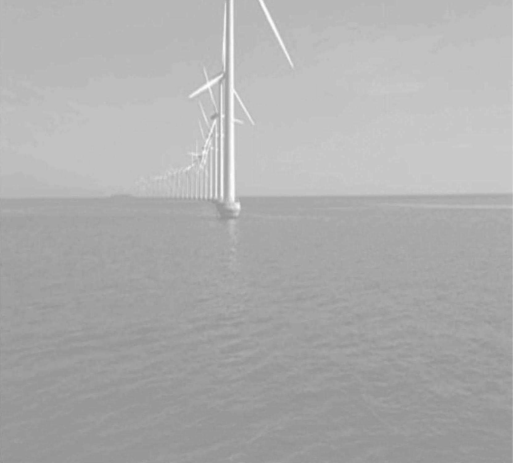
对于任何风力机的安装，一些辅助工作都是必不可少的(如地基和出入风电场道路的建设、电网架设、场址建设以及项目开发和管理)。对于平坦的陆上场址，如丹麦和德国北部的典型场址, 总投资成本大约是前期工作成本的 1.3 倍 (EUREC 协会，1996)。在英国，场址通常选在比较偏远的丘陵地区，其额外成本(是指除风力发电机组外的所有成本)有增高的趋势，其典型的成本明细如表 9.1 所示。
表 9.1 10MW 风电场典型成本细目
| 风电场组成部分 | 占成本百分比 |
| 风力发电机组 | 65 |
| 地面工程(包含地基) | 13 |
| 风电场电力设施 | 8 |
| 电网接入 | 6 |
| 项目开发和管理成本 | 8 |
坚硬的土地状况、岩石、沼泽地以及难以开发的道路，都会增加整个工程的造价。高风速场址能够提供较高的能量输出, 但是需要更昂贵的基础设施来支撑极限载荷。电网接入费用取决于连接点之间的距离以及每个连接处所设定的电压等级(EWEA，2009)。风力机的出厂价(占总工程费用的 \({65}\% \sim {75}\%\) )取决于当时市场上对风力机的购买价。
风电场开发商通常喜欢选择规模较大的项目。这样一来, 固定费用, 尤其是电网接入、项目开发和管理费用, 可以延伸较大的投资。选择大项目更多的好处是安排项目资金的固定费用也会很高。然而, 在丹麦和德国, 开发小型风电场的个人、 社会组织和商业集团也很常见。社区涉入的好处显而易见，如果能够为本地居民带来切实的利益，则该开发计划更容易获得批准。
9.1 项目开发¶
风电场开发和其他发电项目开发的过程类似,但由于其所具有的特殊要求,即风力发电机组必须选址在年平均风速较高地区，从而使能量输出最大化，风电场面积大小是影响周围环境的重要因素。英国风能协会(BWEA,1994)在“对风力资源开发的最优操作指导”一文中刊载了对风能开发的指导条例。欧洲风能协会 (EWEA)也发布了类似的条例。
开发风电场项目的三大要素是:①技术和经济问题，②环境考虑，③沟通和咨询。或许会令许多工程师和技术人员惊讶的是，技术和经济考虑通常是最直接的， 但项目成败的关键却是对环境的考虑, 以及与当地居民和规划部门的沟通与咨询过程是否顺利。
风电场开发大体分为如下几个阶段:
(1)初始选址。
(2)项目可行性评估。
(3)计划(允许)申请的准备与提交。
(4)风电场建设。
(5)风电场运行和拆除以及土地恢复。
9.1.1 初始选址¶
最初, 通过书面研究确定一个合适的场址, 并将之确定为潜在的候选风电场场址。前面提到过,一个风力发电机组的平均发电量由下式给出:
式中, \(P\left( U\right)\) 为风力发电机组的功率曲线; \(f\left( U\right)\) 为风速的概率密度函数 (PDF); \(T\) 为时间周期。
功率曲线可以从风力发电机组设备供应商处得到，风速的初始 PDF 估计可以从风能地图 (如 Troen and Petersen, 1989) 中获得。PDF 通常以威布尔分布为依据, 同时考虑到地域气候因素、周边地形粗糙度和地面障碍及拓扑。PDF 通常用 12.30°的扇形来进行计算，通常采用数字评估技术与功率曲线集成在一起。在项目开发阶段只需要大概的风电场产出估计，用于确定潜在的场址。然而，通过初始计算机模型来增补风能地图是很有用的。
在英国，依据NOABL 气流模型(ETSU，1997a)建立风速数据库。此模型显示了地形对风速的影响，并且能够评估地平面以上 \({10}\mathrm{m}\) 、 \({25}\mathrm{m}\) 或 \({45}\mathrm{m}\) 高度每平方公里的年平均风速。上述并没有考虑当地的热对流和本地效应，而这些对风速有很大的影响, 在场址测量中, 这些都是要求精确估计的。
如果得到的风速数据具有可用性, 那么单台风力发电机组的产能可以被估算出来, 如图 9.1 所示, 则结合分级的风速分布和功率曲线, 能量产出公式为
式中, \(H\left( {U}_{i}\right)\) 为在风速仓 \({U}_{i}\) 内的小时数; \(W\left( {U}_{i}\right)\) 为此风速下的功率输出,这里共有 \(n\) 个风速仓。
另外, 在评估风力资源时, 确认道路的可用性也是必需的, 或者是可以以合理的代价来开发道路用于运输风力发电机组及其他设备。大型风力发电机组的叶片长度为 \({50}\mathrm{\;m}\) ,因而在小型道路上运输这些设备是很困难的。对于大型风电场而言, 如果变电站选址在此，最重的设备当数主变压器了。
当地电网应该有能力提供配电网所能接受的发电容量信息, 尽管对于一个初始的近似值来讲，如表 10.4 中提到的考虑拇指法则是有用的。但是，这种拇指法则只是给出了近似信息, 对于电网需要延伸的地区, 需要考虑到高成本及环境影响及时延。
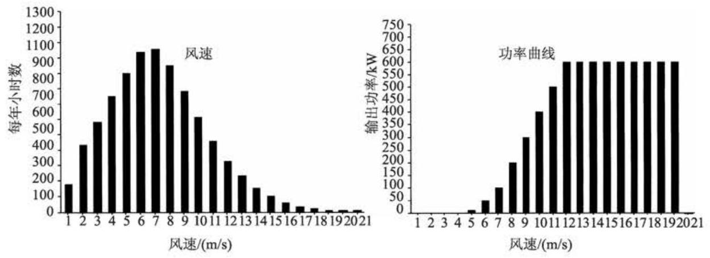
图 9.1 一台风力发电机组的年产能计算
最初的技术评估常常伴随着对环境问题的考虑。最重要的约束包括对诸如国家公园或是其他具有特殊环境地区的特别要求, 即确保没有风电机组建立在该地区附近，从而不会对当地的居民、游客带来干扰(如噪声、视野障碍、光线闪烁等)。 表 9.2 显示了中等大小风力机的典型间距。
表 9.2 中等大小的风力机的典型间距
| 特 征 | 典型间距 |
| 居民区 | 350~500m |
| 公路、干道、铁路 | 风力机叶尖+10% |
| 公共用地 | 50m 风力机叶尖，取决于公共用地的使用 |
| 架空电缆 | 风力机叶尖+10% |
| 风电机组 | 在主流风向上 $5 \sim 6$ 个叶轮直径 穿过主流风向上 3~4 个叶轮直径 |
一个初步的可视化效果评估同样要求考虑风电场的可见度, 尤其是从重要的公众角度来看。如果在风电场规划的区域内, 由于一些动植物群的存在, 此地区具有特殊的社会生态学价值, 则像那些具有特殊考古意义或历史意义的区域一样, 应该避免开发。通信系统 (如微波线路、电视网、雷达或广播) 可能会受到风力发电机组的影响, 这些都需要提前考虑。
同样, 从技术和环境因素来考虑, 同当地市民或是规划部门对主要的潜在问题, 即那些在决定工程实施后的种种细节进行开放式讨论是很通常的做法。这些都在环境影响评价的记录范围内。
9.1.2 项目可行性评估¶
一旦场址选定, 就要进行更详细、更全面的调研, 以便确定项目的可行性。风电场能量产出以及由此预计的经济效益, 建立在整个项目周期基础上的风力发电机组将对风速非常敏感。因此, 通常在复杂地形上并不以最初测定的风速作为标准, 而是利用测量关联预测 (MCP) 技术来确定风力资源的长期可用性 (Derrick, 1993; EWEA,2009)。
9.1.3 测量关联预测技术¶
测量关联预测(MCP)技术基于通过在风电场利用一系列工具测量风速，将结果与气象站同时的测量值关联起来。场址的平均风速数据选择同气象站风速测量值相当。再用一个最简单的线性约束建立起所选场址风速和长期气象观测风速值的关系如下:
系数是通过对 \({12.30}^{ \circ }\) 扇形的测量得到的,这种关联应用于场址的长期气象站风速记录。这样就允许将气象站测得的长期风速数据用于估计风电场在过去 (如 20 年)的风速情况。然后，过去长期的风速情况将用于预计在将来的项目周期中的风速情况。因此，MCP 技术要求在风电场安装测风的桅杆，桅杆上装有风速仪 (通常是杯状风速仪)和风向标。如果可能的话，一个风速仪放置于风力发电机组的轮毂高度，其余的放在较低处以便测量风速衰减。这种测量至少要持续 6 个月 (很明显, 得到的数据越多, 结果越令人信服), 同时气象站也在进行相关联的测量。
目前, 应用 MCP 技术存在如下一些难题 (Landberg 和 Mortensen, 1993):
(1)对于现代风力发电机组, 需要等高的测风塔, 而等高的测风塔本身就需要设计许可。
(2)场址周围不一定存在合适的气象站(如 50~100km 之内)，或者是气象站的风速风向与场址不同。
(3)从气象站得到的数据未必有较高可信度，可能存在差距，使设计人员花费时间来核对气象站数据与场址数据之间是否存在正确的关联性。
(4)此技术是假设在过去的长期记录可以对整个风电场寿命提供优良的数据预测的基础之上建立的。
MCP 方法如何应用涉及很多变量都在文献 (EWEA,2009) 中有所描述。如果 (微观)选址风速和长期风速之间具有联系，那么这些不同方法之间的这些联系意义不大。由于位于现场气象桅杆的风速计位置的偏差以及从气象站获得长期数据记录的困难使得其变得更重要。
9.1.4 微观选址¶
传统的 MCP 技术如今已经被建立, 而且特别设计了场址数据记录仪, 现代测风塔和数据处理软件都得到广泛的应用。利用 MCP 技术得到的长期风速预计可以同风电场设计相结合使用(如风电场业主、风电场)，从而预测一系列风力发电机组布局的效果。这些复杂精确的程序把风速分布数据和地理风速变化以及其他风力机尾流的影响结合起来, 从而生成任何风力发电机组的产能情况。通常, 用来计算拓扑效果和场地周围环境土地粗糙度的两种模型是风图分析和应用程序 (WAsP) 和 MS-Micro/3(MS3DJH/3R 模型的一系列版本的最新版本) (Walms-ley, Salmon 和 Taylor, 1982; Walmsley, Taylor 和 Keith, 1986)。其他的限制, 如风力发电机组的间隔、地形斜坡、风力机噪声和土地所有权界限可能也会被用上。在考虑当地风速和尾流影响的情况下, 为了获得最大的能量输出, 使用最优化技术来优化风力机的布局。软件包也有图形工具, 用来产生视觉影响的区域、风电场的景观和电缆布局，或者蒙太奇照片。图 9.2 显示了一幅由风电场设计软件产生的预期的风电场能量地图。小山顶部的区域显示最高的能量密度。
9.1.5 场址调研¶
在风速数据被采集起来的同时，应该对候选点进行更详细的调查。这些调查包括对现有土地利用和被集中起来的风电场的条件，如对农业活动情况的谨慎评估。本地的土地条件也需要进行调查以确保风力机的正常安装, 在合理的成本下可以建设公路和建筑。为了减小建设成本, 本地土地条件可能会影响到风力机的选址。水文学的研究同样很重要, 因为它可以决定风电场上是否有水源, 被提议的建设点或电缆通道是否会引起地下水的扩散。对于场地更加详细的调查要求包括弯曲半径、宽度、梯度和可到达的公路的任意高度限制的评估, 还要与当地电网公司研究关于配电网接入以及风电场电力输出事宜。
计划的申请需要准备一份环境报告和公认的书面化的公民代表认可的项目可行性评估。
9.1.6 公众咨询¶
在场址的测风塔竖立起来之前，风电场开发商可能希望组织一些非正式形式的公众咨询。这可能要得到当地的社团组织、环境组织和野生动物保护组织的信任，得到当地政府的同意也是必要的。当然，测风塔的架设并不意味着要建立风电场,但是由于这种测风塔是公众很容易看到的建筑,所以需要仔细咨询以保证减少不必要的公共关注。
9.1.7 计划申请的准备和提交¶
风电场被认为对环境是有重要影响的,通常计划书中的一个重要部分是环境评估报告。环境评估报告的准备是一项昂贵和耗时的工作，通常需要不同专家的帮助。风电场环境评估报告的目的可以总结如下:
(1)描述风力机的物理特性和土地利用要求。
(2)建立候选点和周围区域的环境特性。
(3)预测风电场对环境的影响。
(4)描述用来减小负面影响的措施。
(5)解释建设风电场的必要性，并且提供详细信息让规划部门和普通民众来作出决定。
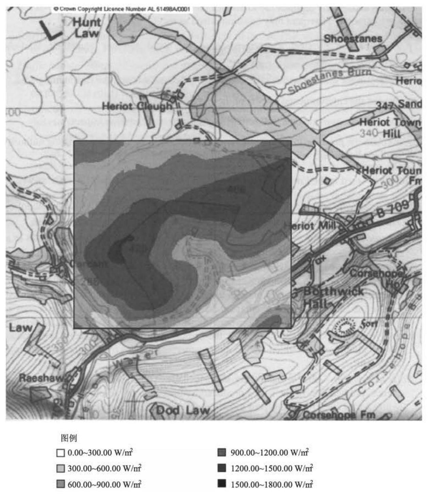
图 9.2 使用风电场设计软件产生的预期风电场的能量图
(承蒙 Garrad Hassan www. garradhassan. co. uk 支持)
基于代表女王固定办公室皇家版权利益的军事测绘图，许可号:100050309
环境评估报告的主题主要包括以下内容(BWEA,1994):
(1)政策框架。申请受国家和地区政策的限制。
(2)地点选择。已经选择的特殊地点的选取是合理的。
(3)指定的区域。风电场对任意指定的区域(如国家公园)的潜在影响应该有评估。
(4)视觉和地形评估。这是所有考虑中最重要的，并且自然成为客观判断中最开放的内容。因此，通常要雇用一家专业的咨询机构来准备评估。使用的主要技术包括具有视觉影响的 ZVI 区域, 即理论能见度 ZTV 区来描绘能看到风电场的地方, 电缆走线框架的分析, 这显示了能够从专门视角看到风力机的地点, 和通过计算机产生的覆盖了地点的蒙太奇照片。
(5)噪声评估。除视觉影响之外，噪声可能成为接下来最重要的议题。因此， 需要对提议的开发活动产生的噪声进行预测，并对附近各个方向上的居民给予特殊的关注。
(6)生态评估。风电场包括它的建筑以及对本地动植物的影响需要考虑在内。这可能需要在一年内的专门一个季节进行地点的调查。
(7)考古学和历史评估。这是在地点选择时进行的调查的扩充。
(8)水文评估。依赖于地点，有必要评估工程对水源和其流通路径的影响。
(9)与通信系统的冲突。虽然风力机肯定对电视信号传输带来影响，但一般仅仅只是本地影响，并且能够以较低的成本进行补偿。对点对点通信设备(如短波系统)或雷达信号的任何影响，可能是更加重要的话题。
(10)飞行器的安全及雷达干扰。若靠近飞机场或军事训练区，需要更加小心地考虑。飞行器雷达上风电场的影响，不管是民用还是军用，在很多国家都逐渐变成一个重要的课题需要尽早关注。
(11)安全。需要进行地点安全的评估，包括风力机的结构完整性。尤其本地项目包括高速公路的安全和阴影闪烁 (shadow flicker)。
(12) 交通管理和建设。环境报告说明工程的所有阶段，并且对工程需要的大卡车和公路上的机动车辆的增加，两者都需要进行考虑。
(13)电气连接。与电气连接(如分站和新电网的建设)有关的重要环境影响。 虽然这可能被当做独立的计划来申请，但是仍然需要专门考虑，因为安装地下任何很长的高电压电路的成本非常昂贵。
(14)对本地经济和全局环境的影响。强调风电场带给本地经济发展和气体排放的减少，两者的好处是很明显的。
(15)报废。评估应该也包括对于在项目结束时风电场报废和风力机拆除的有关建议。报废措施可能涉及地面上所有设备的拆除和所有地方的恢复问题。
(16)减轻对环境影响的措施。显然，风电场对于本地环境有影响，因此，本节详细介绍有关减轻和防止影响环境的提议和步骤。这可能要强调已经应用的最小化视觉侵入和控制噪声的尝试。
(17) 非技术总结。最终需要一种非技术总结，并且广泛分发给当地居民。
9.2 地形和视觉影响评估¶
现代风力机是较大的设备，有时候叶轮直径超过 \({100}\mathrm{\;m}\) ，并且为了有效地工作， 必须安装在平均风速较大的地方。在一个风电场中，每台风力机必须相隔 3~5 倍叶轮直径的距离，因此，大型风电场特别宽广。在获得的能量和风力机的可视性之间往往有一个折中, 因此, 对于任何一个风电场开发项目来说, 都需要在环境报告中有一个关键的部分是关于视觉和地形的评估。对于风电场的地形和视觉的评估往往是由相关方面的专家作出的, 这些专家将尝试着量化这些影响, 但是人们普遍认为这些工作在一定程度上需要一个主观上的解释过程。
当然, 这些评估的过程是反复进行的, 并且将影响风电场的设计和规划。然而, 评估可能被简单地划分为如下几个方面来进行:
(1) 地形特性的评估 (包括地方上的政策和设计)。
(2)设计和缓解负面影响。
(3)影响评估(包括可行性评估和观点分析)。
(4)光影闪烁。
建设风电场的地形多样,并且考虑地形的特性和风力条件来选择风力机的布置。因此，在图 9.3 中，风力机被沿着风电场的边界来安装，如沿着山脊或者沿着海岸线线性规划，如图 9.4 ~图 9.6 所示。
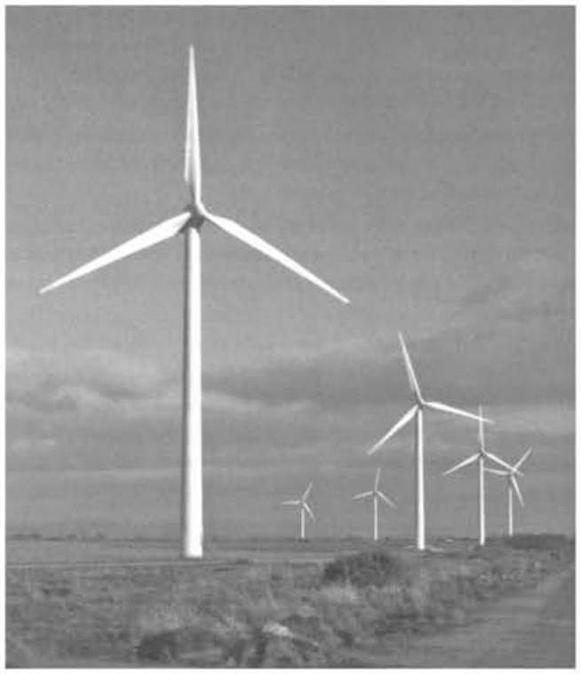
图 9.3 平坦地形上的具有六台 \({660}\mathrm{\;{kW}}\) 风力发电机组的风电场 (该图片由坎比亚郡风电场有限公司 Paul Carter 提供)
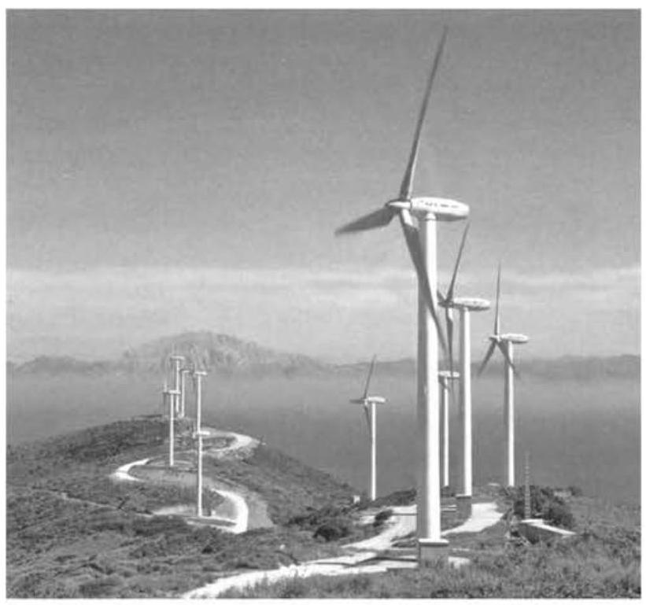
图 9.4 西班牙 Tarifa 风电场, 风力机额定功率 600kW (该图片由 NEG MICON 提供)
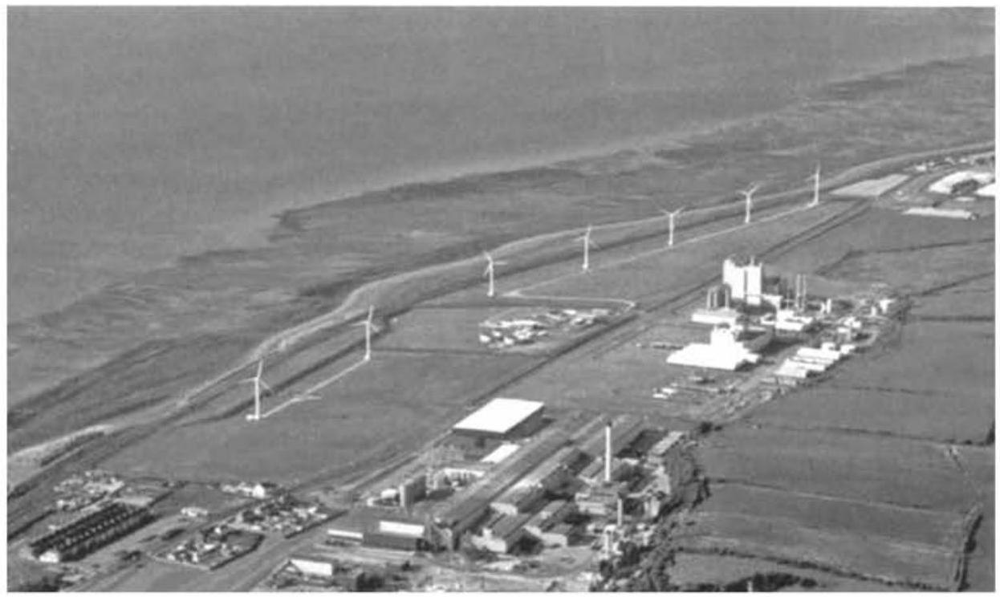
图 9.5 位于海边的额定功率为 \({700}\mathrm{{kW}}\) 风力机的风电场
(该图片由 Powergen Renewables/Wind Prospect 有限公司提供)
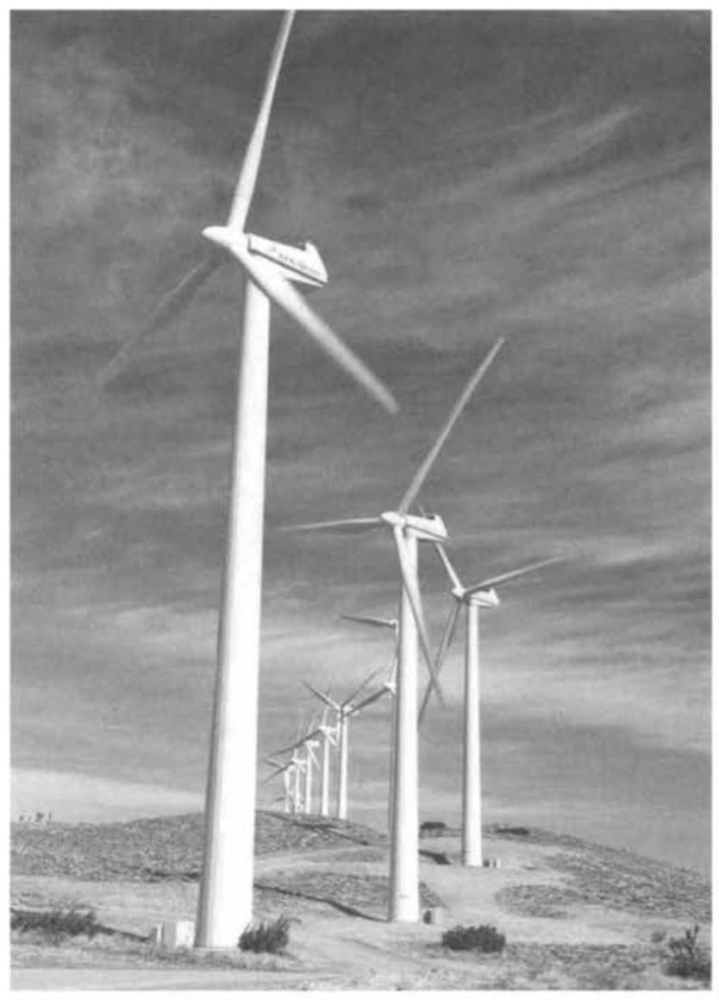
图 9.6 美国加利福尼亚州 Cameron Ridge 风电场
(该图片由 Renewable Energy Systems 有限公司提供)
考虑到社会因素对建设的影响也很关键。对于风电场开发将不仅由物理参数 (如风力机大小、数目、颜色等) 来决定，而且也会由认为风能是能源一部分的看法的人来决定 (Taylor 和 Rand, 1991; Devine-Wright, 2005)。
9.2.1 地形特性评估¶
对于风电场视觉影响的最小化基本步骤是选择一个合适的地点, 并且保证被提议的开发项目和当地环境条件和谐。许多外露的高地可能更加宜人, 并且被选定为重要的风景区, 甚至被选定为国家公园。在国家公园上建设风电场可能相当困难,并且应该认识到, 规划部门对于特殊指定地区的任何看法都很重要。
一旦一个潜在的地点被选定了, 就开始研究建立地区的景观和视觉规划。这将包括在现场观察的基础上，对于现场地形的描述和最新的地图。有必要描述一下地形、地貌和土地利用方式。对于地形的特性和它的质量评估及具有潜在敏感意义的地点都要进行描述。
Stanton(1994)提出一些被认为很有必要的风电场形象的地貌特性。开发应该简单, 符合逻辑且避免视觉污染。虽然一个地形类型与另外一个地点相比, 不再适合建设风电场, 作者认为对于不同类型的开发项目, 该地点是否合适是有变数的。例如,平原耕地被认为适合数量较少的风力机或安置比较相似机型的大型风电场, 而海边被认为适合大数量的风力机, 但是开发应该联系到海边的线性质量。 当然, 对这些观点存在争议, 但它们确实说明了在一个风电场开发之前, 考虑地貌的特点是很重要的。
累积效应被认为是重要的, 同时同一个地区内多个风电场的影响也是主要考虑因素。当地的地形特点, 如建筑物和障碍物, 可以限制视野, 可能意味着一种地形有增加风力机的能力，但需要有详尽的观察来证明。
9.2.2 设计与改进/优化¶
近年来，风力机设计者已经认识到大型风力机的整体结构形式必须合理，在发展一种新机型时工业设计方面要首先加以考虑。从综合因素考虑，现在普遍认为三叶片风力机是首选的(见 6.5.6 节)。双叶片旋转有时会改变旋转速度，而这被认为会引起对风力机的损坏。另外, 在相似的掠过面积下, 两叶片风力机比三叶片风力机旋转得快。有重要的证据(Taylor and Rand, 1995)显示, 低速旋转会使人的眼睛放松。令现代大型风力机有利运行的有效工作方式是在典型的 \({30} \sim {35}\mathrm{r}/\mathrm{{min}}\) 转速运行。人们推测认为，将来为远海面设计的巨型风力机可能会变为双叶片旋转, 以实现这种排列的优点。
在对桁架式塔架的接受上欧洲和北美看起来有所不同。桁架式塔架, 尤其是在基础成本方面, 有明显的设计优势 (见 7.10.4 节), 虽然在上部, 塔架锥形部分必须为叶片之间提供相同的间隙。远距离观看或是在特定的视野内观看, 桁架式塔架只留下旋转部分可见，而通常人们是不希望出现这种效果的。在欧洲，通常首选坚固的管状塔架。由于风况和设计的约束，塔架高度变化很大。在德国北部，很高的塔架(>60m)用来实现峰值发电。相反地，在高风速的英国的西部，会降低塔架的高度, 以最小化风电场的可视面积。
在某些程度上, 风力机的颜色会影响它们的可见度。在英国的高山, 风力机一般是背向天空而建, 因此, 适合采用白色和灰色的色调。风电场在其他背景的衬托下，能融入地面的颜色更加合适。人们一致认为，叶片的防腐层应该磨退光泽以减少反射。在美国，已经有很多应用多种风力机的风电场，有时甚至是不同设计的风力机(即不同的叶片数、不同的转向、不同的塔架的形式等)，而这种发展模式在欧洲群体中是不被接受的。
若想发展模式被接受, 风电场的规划和设计在测定中是很重要的。初步的风电场设计要从工程事项考虑 (即当地的风速、风力机间隔、噪声、地理环境等), 然后, 从视觉和地形方面加以综合考虑。在开阔平坦的地区, 风力机经常排列成矩形以在最大输出的同时形成简单有序的视觉效果。在山区或在有显著高度和障碍物的情况下，风力机依地形特点而设。当从 \(1 \sim {2\mathrm{\;{km}}}\) 远处可以看到风力机时，它们就被认为是控制着风电场的视野，因此，希望在此距离内的视野最小化(如通过移动风力机以利用当地的特点或植树来实现)。当可以看到风力机彼此前后相连时, 会引起视觉上的混乱，而这种堆叠效应是不希望出现的。一些视角是尤其重要的，它适合用来排列风力机以便使风电场的视觉效果尽可能清晰整洁。
除风力机外，还需要许多相关的辅助设备。对于小型风力机，变压器安装在塔架附近，并用围栏围起来以防止恶劣的天气和恶意破坏。但是，许多大型风力机的塔架足够宽而可以把变压器放在里面，这样有效地减少了风电场的混乱。有时经常会需要一个风电场变电站和本地控制建筑。工程学指出, 变电站应该建在风电场的中部，但为了减小视觉影响，它经常偏离风电场一段距离以达到最小的视觉干扰。在欧洲的风电场中, 所有的电缆铺设都在地下, 而且它也适合利用地下电缆来连接终端及当地用户系统, 但费用比较高。风电场内要有道路到达各个组成部分, 而且它们是计划的临时需要, 并且在风电场建成后要恢复原貌。如果道路必须恢复以通过用来维修的大型起重机当然会增加风电场投入的成本。
9.2.3 效果评估¶
环境评论的一个主要部分是对视觉效应的评估。风电场的地形和视觉影像评估现在成为一个重要的专业学科，有很多专家在研究并且有一部分著作，如纽卡斯尔大学(2002)、Horner + maclennan 以及 Envision(2006)。现在有两种主要的技术:①利用视觉效应区域的可见度分析(ZVI)，②利用电缆框架和蒙太奇照片的视点分析。
视觉效应区域显示在周围 \({10} \sim {20}\mathrm{\;{km}}\) 范围内，风力机或风力机的任何部分都是可以看到的。ZVI 方法是在以数字地形模型为基础的计算机方法上形成的, 它会显示当地的情形会怎样影响风电场的可见度。一般地，ZVI 方法忽略了当地地形的特点，如来自树木和房屋的影像。同时，它也没有考虑天气情况，并认为视线良好。图 9.7 给出了一个由商业风电场设计软件得到的 ZVI 图例。多个风电场的累积效应可以由相似的方法得到。
这种观点是基于对许多通过了专业判断而达到视觉效果的风力发电厂地点的评估而得出的。这种选择与当地的规划机构进行了协商，并且可以达到近 20 个可以选择的较大的风力发电场。尽管评估的方法有异同，但基本上都要包括以下几个方面:①当地土地的敏感度，②选择方式的敏感度，③选择可以变化的空间。因此，类似国家公园这样的地方对土地的敏感度就可以定为 “高”。然而，有些具有特殊条件的土地,如废旧的采石场,就可以认为是“低”的。同样,那些用来居住的地方, 或者说, 具有影响力的地方, 敏感度会相对高一些, 而那些只是用于室内劳作的地方 (如当地的工业园区), 则可以认为敏感度会 “低”一些。这样的选择尺度可以被用同样的方式来描述，如风力机的数量、到风力发电场的距离以及发展的前景等。之后, 所有的问题就会被商定, 同时运用很多术语来描述所有的因素。这其中一个可行的方案是否能确定以及被接受, 取决于它是否考虑到了风力发电场会对当地的土地产生有害的影响。
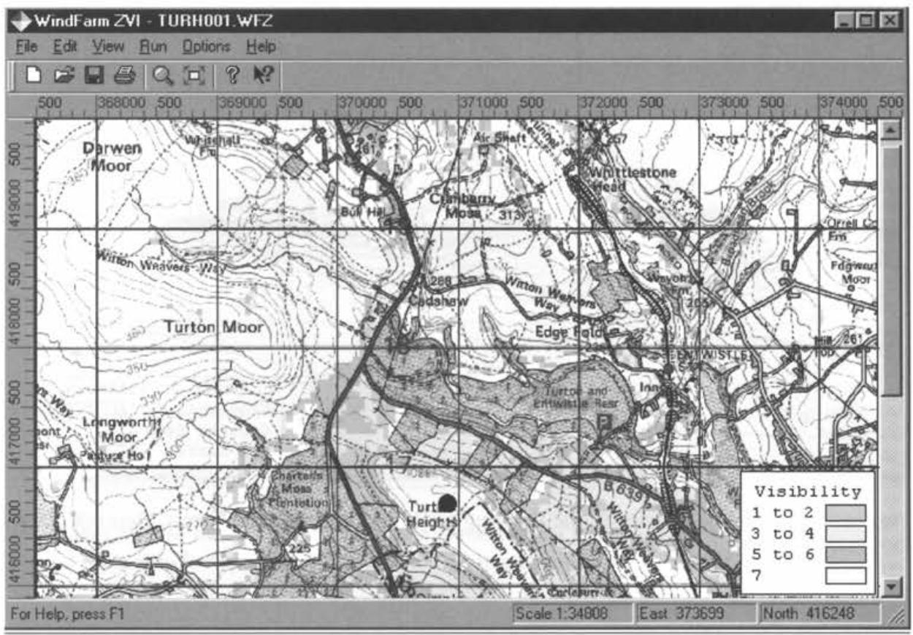
图 9.7 图例为根据军事地图绘出的代表皇家办公室利益的风电场区域视觉效果图(承蒙 ReSoft 支持)
图 9.8 显示了一幅典型的风力发电设计网络图, 随着风能资源的开发, 有关规划当局开始越来越关注这些累积影响, 而图 9.9 是一幅假想图。这些图都是由风力发电设计软件绘制出来的。分立的网络格可以提供很精确的对风力发电机组的放置地点和尺寸的影像，而假想图则是一幅概况式的图示。更有一些假想的视频可以让人有个发电机动态的影像，但这样的方法也不多用了。
9.2.4 光影闪烁¶
光影闪烁是一种术语，用来形容当太阳位于发电机后面时，由于叶片旋转而带来的光影晃动。当光线扫过窗户的时候，这种晃动会给当地居民带来一些影响 (EWEA,2009;AWEA,2008)。易引起干扰的频率大概为 \({2.5} \sim {20}\mathrm{\;{Hz}}\) ,此时,风力机对人类产生的影响则类似于电网电压波动导致电灯光照强度的变化对人的影响。在这种情况下,一种主要的考虑是 \({2.5} \sim 3\mathrm{\;{Hz}}\) 频率的光闪会造成人的不规则行为，如一些癫痫症状。较高频率段 \({15} \sim {20}\mathrm{\;{Hz}}\) 则可能会导致类似痉挛这样的症状。在一般的人群中，大约有 10% 的成年人和 15%~30% 的儿童会对某些频段的光闪有不适应症状(Verkuijlen 和 Westra, 1984)。
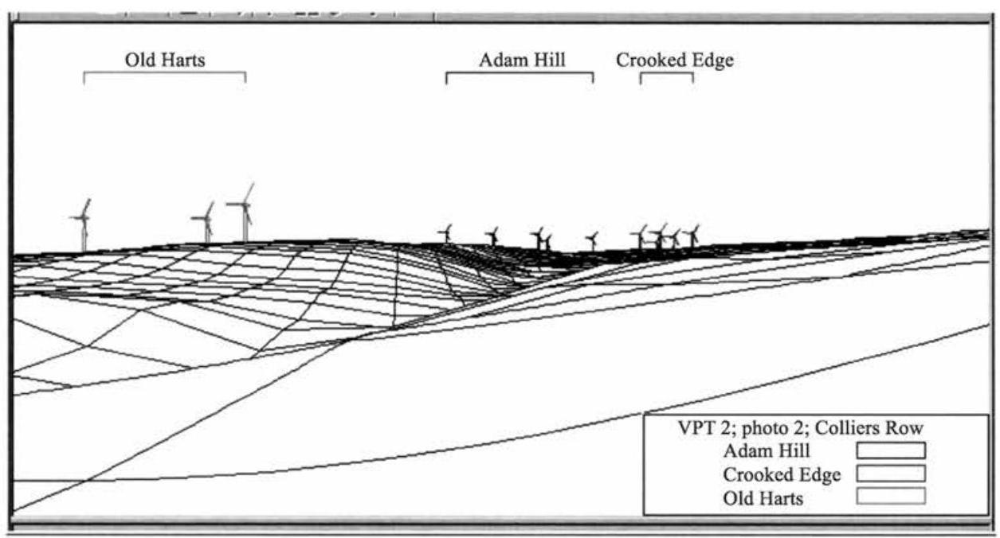
图 9.8 网络效果图实例(承蒙 Resoft 支持)
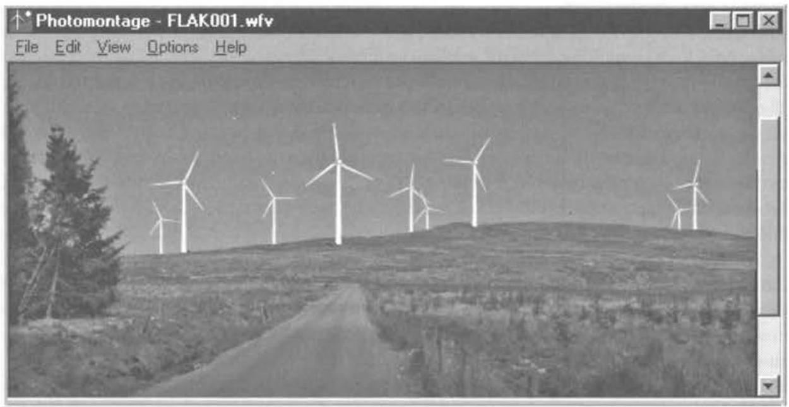
图 9.9 风力发电设计假想图
大型的现代三叶片风力机旋转转速在 \({30} \sim {35}\mathrm{r}/\mathrm{{min}}\) 以下,单个叶片穿越频率低于 \({1.5} \sim {1.75}\mathrm{\;{Hz}}\) ,是低于标准的 \({2.5}\mathrm{\;{Hz}}\) 频率的。风电场 SCADA 系统可用来使一些风力发电机组暂时停机, 偶尔会导致光影闪烁不良现象的产生。在考虑怎样关闭一个位于居民区的风力机时, 光影闪烁、噪声约束及预防视觉主导都需要进行处理。图 9.10 显示的是当居民区接近于一个风力机时光影闪烁可能导致干扰的计算。可以发现, 这些现象通常发生在春季或者秋季的傍晚时分 (从 15 点左右到 17:30分左右)。
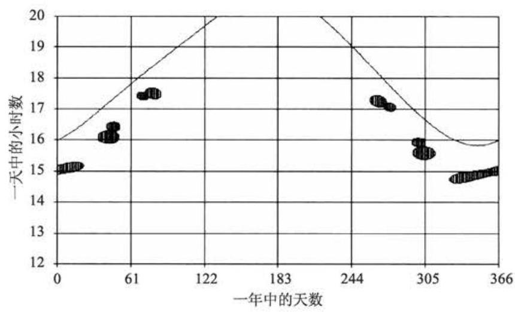
图 9.10 影子闪烁预测，连续线表示日落时间 (由 ReSoft 许可转载)
9.2.5 社会学方面的考虑¶
有许多基于计算机工具方面的算法可以用来做视觉效果的评估和地形的构架, 并且这些规划者们也发展出了运用专家系统来评判这些效果好坏的方法。然而, 公众的一些关于风力发电场是否应该建造的观点则还要受到一些其他因素的影响。公众关于建造的态度曾经被研究认为是很值得考虑的细节 (如 ETSU 报道 W13/00300/REP, 1993; W13/00354/038/REP, 1994)。一般来说, 大部分的公众还是支持风电场建设的, 尽管有些人会持有反对意见。但是有些情况是, 当地的一些居民会认为他们为了获得利益，不论是财力上还是环境上，都付出了高昂代价的投入，与得到的利益、财物和环境并不一致。这种财政收益会以多种形式分配给社区，包括合作或社会拥有的风电场开发，而环境的问题则还在磋商中。同时，静止的风力发电机组比那些旋转式的风力发电机组更容易让人接受，并且其具有较低的切入风速，高可靠性更能提高公众的认可度和接受度。
9.3 噪声¶
风力机产生的噪声通常被认为是很重要的环境问题之一。在早期发展风力发电的时候, 即 20 世纪 80 年代, 有些风力机会产生很大的噪声, 并且引发了附近居民的抱怨。然而，从那以后，降低风力机噪声的技术和预测风电场噪声技术方面都取得了可观的进步。
英国政府计划书中有如下的政策导向 (环境部, 1993), 建议任何风电场开发的应用计划中应该包括以下信息(考虑机组细节和预测的噪声级别):
(1)通过当地的风速预测出风电场的噪声级别限制。
(2)测试当地的背景噪声值和合适的风速。
(3)用一张图示来说明风力机的适宜位置、风力的情况以及附近的发展情况。
(4)要安装机组噪声辐射的完整测量结果，包括声音的能量值、窄带频率。
IEC 61400-11(2006)描述了如何在一个风力机上确定噪声排放测试能够进行，同时 IEC 61400-14(2005)详细说明了这些测试的结果应怎样进行申报，以便他们可能成为有相同设计的一批风力机的典型。这些测试结果由风力机供应商为风电场的噪声顾问提供，其承担着一部分的环境影响评价。图 9.11 显示的是从一个小型发电厂预测出噪声压力等级的例子。噪声边缘 \({40}\mathrm{\;{dB}}\left( \mathrm{\;A}\right) \text{ 、 }{50}\mathrm{\;{dB}}\left( \mathrm{\;A}\right)\) 及 \({60}\mathrm{\;{dB}}\) (A) 叠加在一个风电现场及相邻点之间的地图上。
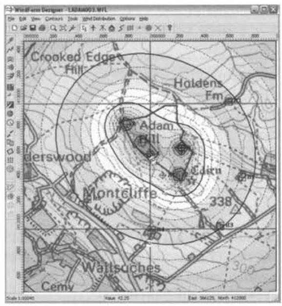
图 9.11 小型风电场周围噪声等值线
9.3.1 术语和基本概念¶
用两种不同的方法来描述风力机的噪声，它们是源噪声级别 \({L}_{\mathrm{w}}\) 和当地的噪声级别 \({L}_{\mathrm{P}}\) 。因为通过人耳的反应，使用一种对数尺度的关于听觉限制的参考等级表来进行判定。 \({L}_{\mathrm{P}}\) 和 \({L}_{\mathrm{W}}\) 的单位都是分贝 (dB)。
一个噪声源用 \({L}_{\mathrm{w}}\) 来表示声音能量的级别如下:
式中, \(W\) 为所有声音能量的辐射; \({W}_{0}\) 为一个参考值。
声音压力值 \({L}_{\mathrm{P}}\) 被定义为
式中, \(P\) 为 RMS 关于声音压力的值; \({P}_{0}\) 为一个参考值。
通过简单的代数迭加可以看到，声音压力序列的得出公式为
因此，将两个量级的声音压力迭加得到了 \(3\mathrm{\;{dB}}\) 的最后值。表 9.3 得出了一种能够求得声音压力范围的值。
表 9.3 音量等级举例
| 举例音量等级 | 声压级/dB(A) |
| 听力范围 | 0 |
| 郊区的夜晚 | 20~40 |
| 繁忙的办公室 | 60 |
| 工厂内部 | 80~100 |
| 100m 处的喷气式飞机 | 120 |
| 350m 处的风电场 | 35~45 |
人的耳朵能够听到 \({20}\mathrm{\;{Hz}} \sim {20}\mathrm{{kHz}}\) 频率范围的声音。一个窄带频谱，伴随着确定的测量带宽, 能够给出最详细的关于信号的信息, 可以用来研究不同的声调。然而,使用 \(1/3\) 倍频带也会得到同样的效果。因为其上部分所包含的能量是其使用 \(1/3\) 倍频带的低频带宽的 2 倍多，而频率占有 \(\sqrt[3]{2}\) 倍多。
使用频率来研究声音对人耳朵的影响很平常，这是通过一个叫做量度的滤波器来完成的。由此测得值的单位是 \(\mathrm{{dB}}\left( \mathrm{A}\right)\) 。
表 9.4 给出了中心频率的值。从表 9.4 中可以看出,在低于 \({250}\mathrm{\;{Hz}}\) 和高于 \({16}\mathrm{{kHz}}\) 的信号都被很快地消耗了。
表 9.4 倍频带的中心频率和 \(\mathbf{A}\) 权重
| 倍频带中心频率/Hz | A 权重/dB |
| 16 | -56.7 |
| 31.5 | -39.4 |
| 63 | -26.2 |
| 125 | -16.1 |
| 250 | -8.6 |
| 500 | -3.2 |
| 1000 | 0.0 |
| 2000 | 1.2 |
| 4000 | 1.0 |
| 8000 | -1.1 |
| 16000 | -6.6 |
一个等量声音压力的等级是一个持续的包括能量值随着时间变化的声音序列。
超过的等级， \({L}_{\mathrm{A}{90}}\) 被定义为 \(\mathrm{A}\) 一重量级声音压力等级，超过时间的 \({90}\%\) 。有些规划部门喜欢使用 \({L}_{\mathrm{A}{90}}\) 声音压力等级，尤其是用来测量背景噪声，就像用 \({L}_{\mathrm{{eq}}}\) 。 一个风力发电场持续的噪声源等级取决于 \({L}_{\mathrm{A}{90}}\) 声音压力级别 (测量超过 \({10}\mathrm{\;{min}}\) 周期),其值可能是 \({1.5} \sim {2.5}\mathrm{\;{dB}}\left( \mathrm{\;A}\right)\) ,比 \({10}\mathrm{\;{min}}\) 的 \({L}_{\mathrm{{eq}}}\) 的值要低。
声音强度值 \(I\) 是通过一个区域的能量单位值,
并且伴随着固定的变化远离声音源。
式中, \(P\) 为声音压力的 RMS 值; \({Z}_{0}\) 为声音的阻抗值。
选择一个合适的值 \({I}_{\text{ ref }}\) ,则声音压力值将被表述成为如下声音强度值:
式中, \(r\) 为到声音源的距离。
因此,在理想的球形传播条件下,
同样, 如果是半球形传播条件, 则
根据反平方定律, 在球形或半球形传播假设条件下, 来自一个点声源的声压随着距离的增加而衰减,所以距离每增加一倍,声压就会降低 \(6\mathrm{\;{dB}}\) 。
对于线性噪声源,声压由下式决定:
\({L}_{\mathrm{{wl}}}\) 是声源单位长度的声功率。所以,声音按圆柱形传播时,声压的衰减与距离成正比，也就是到声源的垂直距离每增加 1 倍，声压衰减 \(3\mathrm{\;{dB}}\) 。
9.3.2 风力机的噪声¶
来自风力机的噪声可被分成如下两部分:
(1)由机械运动产生的。
(2)由空气动力产生的。
虽然冷却风扇、辅助设备(如泵和压缩器)和偏航系统也会产生机械噪声，但是机械噪声主要是由机舱内的旋转机械，尤其是齿轮箱和发电机产生的。机械噪声的频率或声调 (如齿轮箱某一段的啮合频率) 通常是可以识别的。含有离散声调的噪声更有可能遭到起诉，所以很多噪声标准要求 \(5\mathrm{\;{dB}}\) 的补偿。机械噪声可能是由空气产生的 (如风冷发电机的风扇), 或者通过这些结构进行传播 (如齿轮箱啮合的噪声通过齿轮箱机壳、机舱台板、叶片和塔架传播)。
Pinder 在 1992 年给出了表 9.5 中 2MW 风力机的声功率等级。由表 9.5 可以看出, 通过结构传播的噪声源主要是齿轮箱。
表 9.5 2MW 实验风力机的机械噪声功率等级 (Wagner, Bareis 和 Guidati, 1996)
| 部件 | 声功率等级/dB(A) | 空气或结构产生 |
| 齿轮箱 | 97.2 | 结构产生 |
| 齿轮箱 | 84.2 | 空气产生 |
| 发电机 | 84.2 | 空气产生 |
| 轮毂 | 89.2 | 结构产生 |
| 叶片 | 91.2 | 结构产生 |
| 塔架 | 71.2 | 结构产生 |
| 其他附件 | 76.2 | 空气产生 |
减小风力机机械噪声的技术有合理设计加工齿轮箱、使用抗振的安装和耦合来限制结构产生的噪声、机舱消声以及使用液体冷却发电机。齿轮箱设计中微小的改变 (如比率和齿形) 对噪声的产生具有显著影响 (IEC 61400-14,2005)。
空气动力噪声是由很多原因造成的，如
(1)低频噪声。
(2)流入的湍流噪声。
(3)空气动力面本身的噪声。
低频噪声是由经过叶片的风速变化所引起的, 塔架的存在或者是风的切变会导致风速的变化。这一效应无论在下风向的风力机上还是上风向风力机上都很突出。噪声频谱主要是叶片转动频率(典型值可达 \(3\mathrm{\;{Hz}}\) )及其谐波(典型值可达 150Hz)。由表 9.4 可以看出，A 声压级滤波器使这些频率的噪声大大衰减，所以它们不再是可以听到的噪声的主要部分了。但是，有报道说，在 20 世纪 80 年代建造的实验性的下风向风力机使附近建筑物产生了低频振动。对于逆风风力机来说, 增加叶片和塔架之间的间隙可以使这一影响大大降低。Hubbard 和 Shephard (Spera,1994)通过实验展示了一个直径为 \({80}\mathrm{m}\) 的下风向风力机产生的低频噪声证据,并与一台直径为 \({90}\mathrm{\;m}\) 的上风向风力机进行了比较。
叶片与空气扰动产生涡流相互作用使空气流入时产生了宽频噪声。通过观测器可以知道，这种被称为“嗖嗖”声的噪声频率高达 \({1000}\mathrm{\;{Hz}}\) 。入流扰动噪声受叶片速度、空气动力面和扰动强度的共同影响。Wagner, Bareis 和 Guidati (1996) 比较详细地描述了这一现象, 认为对这一现象的理解还不够透彻, 并给出了一个现场实验的结果。实验中, 随着扰动强度的增大, 声压等级反而降低了。
空气动力自身噪声是由空气动力本身产生的, 即使是在稳态、无湍流扰动的情况下也会产生。尽管叶片表面的缺陷会产生一定频率的噪声，但是空气动力噪声的带宽一般还是很宽的。空气动力自身的噪声包括以下几种:
(1)叶片后沿噪声。这种宽频噪声是可以听得到的“嗖嗖”声，频率范围为 750~2000Hz。这种噪声的大小取决于湍流边缘层与叶片后沿的相互作用。叶片后沿噪声是风力机高频噪声的主要来源。
(2)叶尖噪声。本文没有指明三维的尖端效应是否是产生风力机噪声的主要原因。但是, 同风力机提供的功率一样, 叶片的大部分噪声主要是由叶片外围 25%的部分产生的，因此，对于研制新型的叶片边端以降低噪声有大量的研究。利用边缘制动或其他的使用表面的控制作用使叶片形状不再完整，这是产生噪声的其他的潜在原因。
(3)失速效应。叶片失速在空气动力面附近产生了不稳定的气流，这也会产生宽频的噪声。
(4)钝缘噪声。钝缘会引起涡流和音频噪声。这些噪声可以通过锐化边缘来消除, 但是锐化边缘由制造和装配决定。
(5)表面缺陷。例如，在安装过程中造成的破坏或雷击致使表面产生缺陷这样的情况，都会成为音频噪声的重要来源。
显而易见，降低空气动力噪声的方法就是降低叶轮的旋转速度，尽管这样做会增加电力损耗。
变速或双速风力机的优点就是在低速的情况下能降低噪声。一个有效的 IEC 61400-14(2005)附加物提供了风力机叶轮速度之间的联系以及声能级如下:
另外一种方法就是减小叶片的攻角，尽管这样做可能又会增加损耗。
Stiesdal 和 Kristensen(1993年)对一种减小噪声的控制方法进行了综合性的描述, 这个方法被应用到一台有失速调节的 300kW 的风力机中。齿轮箱被看做音频, 是机械噪声的重要来源。控制的措施包括对齿轮的设计和制造的详细修正以及在齿轮箱的外壳附加绝缘层。通过机舱的密封和精心设计通风口的声音隔板可以使空气产生的机械噪声达到最小。通过在齿轮箱和发电机上安装橡胶以及在高速转轴上使用橡胶耦合装置,则可以减少结构噪声的产生。低速轴 (2m) 减小了传递到叶轮的驱动振动。可以通过一种叫“边端鱼雷”的装置来控制边端涡流以减小边端噪声，而叶片后沿噪声可以通过指定叶片后沿的厚度 \(1 \sim 2\mathrm{\;{mm}}\) 来减小。通过在靠近边沿的叶片主边缘上安装扰动条可以减小失速噪声，边沿使失速可以得到控制。所有的这些措施使声功率等级降低了 3 ~ 4dB，而且消除了主频。对边缘的改进，可控失速以及齿轮箱的改进被认为是噪声控制方法中最重要的。采取改进措施后，在风速 \(8\mathrm{m}/\mathrm{s}\) (在 \({10}\mathrm{m}\) 的高度测量所得)下，测量风力机的噪声是 \({96}\mathrm{{dB}}\) (A)。这是一项巨大的改进，因为现在的 \({600}\mathrm{{kW}}\) 风力机的典型声功率等级在 \(8\mathrm{m}/\mathrm{s}\) (在 \({10}\mathrm{\;m}\) 的高度测量所得)的风速下可能会达到 \({100}\mathrm{\;{dB}}\) (A)，并且声功率等级 \(1\mathrm{\;m}/\mathrm{s}\) 会增加 \({0.5} \sim {1\mathrm{\;{dB}}}\left( \mathrm{\;A}\right)\) 。
9.3.3 风电场噪声的测量、预测和评估¶
风力机的声功率等级一般是由现场实验标定的。这些要求开始是由 IEA 操作规程建议规定，现在已经作废，并且现在它已经列在了一项国际标准(IEC 61400-11,2006)中。户外实验是必需的，因为现在的风力机尺寸很大，而且有必要测试风力机在运行中的噪声性能。风力机的声功率等级不能直接测量，但是通过在不同的风速下在风力机附近测量一系列的声功率等级，并消去背景声音功率等级，就可以得到风力机的声功率等级。这种方法给出了风速为 \(6 \sim {10}\mathrm{m}/\mathrm{s}\) 的情况下单一风力机的 \(\mathrm{A}\) 加权分贝声功率等级，除了要检测 \(\mathrm{A}\) 加权分贝声压等级外， 还需要检测 \(1/3\) 倍频和音调，可选择的是噪声来源的方向性。
测量是在距离塔底 \({R}_{0}\) 的地方进行的,
式中, \(H\) 为轮毂的高度; \(D\) 为叶轮的直径。测量距离的选定要保证距离声源足够远，但是又要使得因地形、大气状况或风动引起的噪声最小。麦克风放置在地面上的控制板上, 以便于考虑地面对声音音调的干扰。所用到的麦克风放置在风力机顺风位置下。
随着风速的变化， \(\mathrm{A}\) 加权分贝声压等级也会进行同步测量 (每 \(1 \sim 2\mathrm{\;{min}}\) 测量的次数有 30 多次)。所有的风速都按参考高度为 \({10}\mathrm{\;m}\) ，地面粗糙度长度 \({Z}_{0} = {0.5}\mathrm{\;m}\) 的情况进行修正。在风力机运行的情况下，测量风速更好的方法就是通过风力机输出的电功率和功率曲线来计算。主要的声压等级测量在顺风位置进行，而其他三个麦克风用来定向。无论风力机运行与否,风速测量的范围在 \(6 \sim {10}\mathrm{\;m}/\mathrm{s}\) 之间。 背景噪声的矫正通过式 (9.18) 实现:
式中, \({L}_{\mathrm{P} + \mathrm{N}}\) 为背景声速在 \(8\mathrm{\;m}/\mathrm{s}\) 情况下风力机的声压等级; \({L}_{\mathrm{N}}\) 为风力机在 \(8\mathrm{\;m}/\mathrm{s}\) 情况下背景的声压等级。
风力机的视在声功率等级通过下式计算:
式中, \({R}_{\mathrm{i}}\) 为从麦克风到风力机主轴的斜向距离。
可以看出，计算时是假定风力机主轴的噪声是按球面传播的。式 (9.19) 中减去 \(6\mathrm{\;{dB}}\) 是为了通过测量计算得到自由场的声压等级，同时也可以修正麦克风放置在地面反射板时造成的声压加倍的误差。
IEA 文档(国际能源机构，1994)的附录中给出了一种在平坦开阔的地形条件下，距离为 \(R\) 时，估算一个或一组风力机的声压等级的方法。该计算是基于声波半球形传播的[式(9.20)]。
修正项 \(\Delta {L}_{\mathrm{a}}\) 是为了消除大气吸收的影响才引入的,可以通过 \(\Delta {L}_{\mathrm{a}} = {R}_{\alpha }\) 来计算。其中 \(\alpha\) 是每倍频带声音的吸收因子， \(R\) 是到风力机主轴的距离。另外的一个可选的方法就是通过一个类似于式 (9.20) 的方程来计算，但是 \(\alpha\) 取 \({0.005}\mathrm{\;{dB}}/\mathrm{m}\) [《丹麦风力电站噪声法定条例》(1991)推荐】 ， \({L}_{\mathrm{W}}\) 指定为单个宽带声压等级。
如果影响声压等级的风力机有多个，那么每个风力机的声压等级独立，总的声压等级通过下式计算:
有趣的是，IEA 附录在结束的部分指出，在对中、小型风力机(55 ~ 300kW)的测试中发现,通过上式预测的噪声等级与实际测量值非常吻合 ( \(\mathrm{A}\) 加权分贝声压等级的误差一般在 \(\pm 2\mathrm{\;{dB}}\) 内)。但是，当使用更加详细的方法进行预测时，误差却很大。
IEA 中检测某一个点的声压等级的方法 (1994)，其前提是假设声音按照半球形传播，并且对大气吸收造成的影响进行了修正。半球形传播的假设是距离每增加 1 倍，声压等级就降低 \(6\mathrm{\;{dB}}\) 。在某些情况下，尤其是下风向的情况，这种假设是最优的，因为距离每增加 1 倍声压等级降低 3dB。IEA 的方法也忽略了由于气象梯度所造成的任何影响 (Wagner, Bareis 和 Guidati, 1996)。在正常的情况下，空气温度随高度的增加而降低，因此，随着高度增加，声速也会减小，这就使声音传播曲线发生上翘。但是，在温度分布相反的情况下，如在寒冷的冬夜，温度随着高度的增加而升高, 这样会使声音传播的曲线发生下弯。风速受到的影响也是类似的。 在下风向区声音传播曲线会向前弯曲，而在上风向区声音传播曲线则会向后弯曲。 高频的时候，上风向的影响相对来说更加显著。
ISO 9613-2(1996)提出了一种更为复杂的方法来计算声音在户外的衰减。 这个标准通常应用于户外噪声的传播，并不是仅仅来自风电机组的，同时计算出每个点处的声压等级，是由于考虑到电源的几何差异、大气吸收、地面效应、表面的反射及障碍物的遮挡。该计算使用的是倍频带。
国家之间，甚至是同一国家的不同地区之间，对于噪声等级的要求相差很大， 这取决于当地的计划情况。英国风力机噪声工作组(ETSU，1997b)对国际规则进行了修订。在德国、荷兰和丹麦不同的地区对允许的最大声压等级进行了不同的规定(见表 9.6)。
表 9.6 不同的欧洲国家内对声压等级为 \({L}_{\text{ Aeq }}\) 时的噪声限制
[依据 Gipe,1995。注意不同国家对位置的定义是不同的,更多的数据参阅文献 ETSU(1997a)]
| 国家 | 商业 | 混 合 | 居住地 | 郊区 |
| 德国 | ||||
| 白天 | 65 | 60 | 55 | 50 |
| 夜晚 | 50 | 45 | 40 | 35 |
| 荷兰 | ||||
| 白天 | 50 | 45 | 40 | |
| 夜晚 | 40 | 35 | 30 | |
| 丹麦 | 40 | 45 | ||
与此形成对照的是, 英国的风力机噪声工作组决定将风电场的噪声允许声压等级比背景噪声之上的 \({L}_{\mathrm{A}{90},{10}\mathrm{\;{min}}}\) 声压等级提高 \(5\mathrm{\;{dB}}\left( \mathrm{\;A}\right)\) 。增加 \(5\mathrm{\;{dB}}\left( \mathrm{\;A}\right)\) 是为了实现既保护了内部、外部环境又不过度限制风能技术的发展，因为风能的使用对于环境来说在其他方面有很多好处,而且低于 \(5\mathrm{\;{dB}}\left( \mathrm{\;A}\right)\) 的限制将难以监控。工业噪声标准 BS4142(英国标准, 1997)或许并不能直接用于风电场。但是在该标准中指出, 大于 +10dB可能会引起诉讼的发生，而 +5dB 左右的增加量却没有什么明显的影响。
如果按照以上所述降低 \(5\mathrm{\;{dB}}\left( \mathrm{\;A}\right)\) 的限制，乡间安静的环境可能会受到影响，所以英国风力机噪声工作组推荐了较低的限制:白天35~40dB(A)，晚上 43dB(A)， 白天的限制等级是选择 35dB(A)还是选择 40dB(A) 由以下因素决定:
(1)风电场附近的居民数量。
(2)噪声限制对每千瓦时发电量的影响。
(3) 使用期限以及风力机的暴露程度。
低于 \({35}\mathrm{\;{dB}}\left( \mathrm{\;A}\right)\) 的噪声不至于影响睡眠,夜间采用 \({43}\mathrm{\;{dB}}\left( \mathrm{\;A}\right)\) 的较低标准就是根据这一标准制定的。其中的裕量是因为考虑到敞开的窗户会产生 \({10}\mathrm{\;{dB}}\left( \mathrm{\;A}\right)\) 的衰减，同时，以 \({L}_{\mathrm{A}{90},{10}\mathrm{{min}}}\) 代替 \({L}_{\mathrm{{Aeq}},{10}\mathrm{{min}}}\) 也会减去 \(2\mathrm{\;{dB}}\) 的噪声。噪声标准如图 9.12 和图 9.13 所示。音频最大达到 \(5\mathrm{\;{dB}}\) 的时候也会有补偿措施。英国制定的规则关于风力机所产生噪声目前正在审查(2010)，在不久的将来可能会改变。
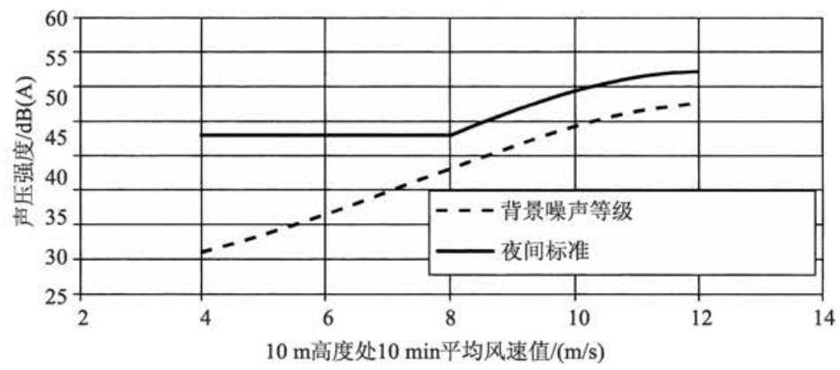
图 9.12 经 ETSU 批准由英国工作组制定的风力机夜间噪声标准
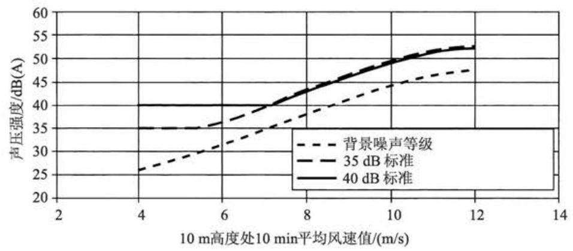
图 9.13 经 ETSU 批准由英国工作组制定的风力机白天噪声标准
9.4 电磁干扰¶
风力发电机组对许多现代通信系统中使用的电磁信号都可能会造成干扰, 所以风力发电机组的选址必须从电磁干扰 (EMI) 的角度进行仔细的评定。特别是风能的发展常常会和无线电系统争夺山顶和其他的一些开阔地, 这些地点对于风电场而言, 能够得到较高的能量输出, 而对于通信信号而言, 则是很好的传播路径。 可能会受到 EMI 影响的系统类型及其工作频率分别为 VHF 无线电系统 (30~ 300MHz)，UHF电视广播(300MHz～3GHz)和微波中继站线路(1~30GHz)。风力发电机组与用于空中交通管制的军用和民用雷达的相互影响也已经成为继续调查研究的课题(ETSU, 2002)。考虑到装载在民用和军用雷达系统上的风电场会导致较多的难题以及基于一些风电场中的延迟,英国曾经不允许半径在 \({74}\mathrm{\;{km}}\) 以内的任何防空雷达站点中从事风电场的开发。
据 Hall(1992) 的报道,对一台 \({400}\mathrm{{kW}}\) 的恒速风力发电机组的测试显示,在距离风力发电机组 \({100}\mathrm{m}\) 远的地方检测不到任何风力发电机组产生的无线电波。发电机及其相关的控制装置和电子设备会产生无线电辐射, 但是, 通过在发电机侧采用恰当的抑制和屏蔽措施可以将其降到最低。风力发电机组的塔架不是一根天线, 它对所有的辐射都有一种巨大的屏蔽作用。如果机舱外壳采用的是金属材料, 它也将屏蔽机舱本身发出的辐射。尽管变速型风力发电机组的电力电子变流器必须采取相应的预防措施，但风力发电机组的电磁辐射并不是一个公共问题。
然而, 散射是与风力发电机组相关的一种非常重要的电磁干扰机制。一个暴露于电磁波中的物体会向各个方向分散入射的能量, 这种空间分布就是所提到的散射。
风力发电机组和无线电通信系统的相互干扰是一个复杂的问题，因为风力发电机组散射机制的特性不容易确定, 而且干扰信号会随叶片转速的变化而变化。 目前，已经存在有大量的，而且不断增加的无线电系统，它们的有效运行必须满足各自不同的需求。ETSU(1997c)指出风力发电机组叶轮的电磁特性将受以下各方面因素的影响。
(1)叶轮直径和旋转速度。
(2)叶轮表面积、平面形状以及包括偏航角在内的叶片定向。
(3)轮毂高度。
(4)叶片材料结构及其表面光洁度。
(5)轮毂结构。
(6)表面污染(包括雨水和冰)。
(7)内部金属元件，包括避雷装置。
对于英国风电场所面临的潜在问题的范围，在 1996 年通过给 99 个风电场的开发商发送多份问卷的形式作了调查 (ETSU, 1997b)。其中, 有一份问卷是针对每一个正在运行或是筹建之中的风电场。在收到的 46 份回复中, 有 26 个风电场项目遇到了潜在的问题。表 9.6 对问卷回复进行了归纳。大部分问题都与干扰有关，即对本地电台或转播电台接收(RBL)的潜在干扰。在英国，若一个筹建中的风电场被证实可能会对电视接收存在潜在的干扰，广播公司将对该项目进行调查。 对已获取规划许可证的项目，广播公司也可以提出反对意见。在问卷调查中所提到的大部分此类情况都是通过以下方式来解决的, 风电场的开发商提供保证, 如果接收到任何投诉,将由风电场项目出资对广播信号的丢失进行补偿。据报道,有三个风电场确实对本地的电视信号造成了干扰, 其中有两个通过调整家用天线解决了问题，另一个则是通过安装自助式中继器以及重新调整家用天线来克服了干扰。
报告中也提到了存在少量的关于 VHF 无线广播和微波系统的潜在问题。有一个项目被记录存在大量不同性质的问题,主要包括以下几方面:
(1)在风电场场址区域内有两个通信天线杆。
(2)其中一根天线杆上接有微波中继器。
(3)本地 VHF 通信同时使用两根天线杆，包括消防队。
(4)对本地 TV 接收和 RBL 存在潜在的干扰。
然而, 在经过与相关部门详细研究并基于详细的计算后, 认为可以建立这样一个风电场规划，它不会因为地面电磁干扰的原因遭到反对。
ETSU(1997c)包括了以下信息:各个广播局在判断风电场是否会产生 EMI 问题时的案例。对于微波中继器的固定有两点是很重要的。首先是在发射器和接收器之间留一条清晰的照准线; 其次是第一菲涅耳区部分必须远离障碍物。第一菲涅耳区是一个椭圆体的空间区域, 它对信号的接收起着最重要的作用, 在这个区域中，信号的组成成分将是同相的。为了确保拥有“自由空间”的传播状态，至少 60%的第一菲涅耳区内必须没有障碍物。第一菲涅耳区域的半径由以下公式表示:
式中, \({d}_{1},{d}_{2}\) 为两个微波终端到参考点的距离; \(\lambda\) 为波长 (图 9.14)。
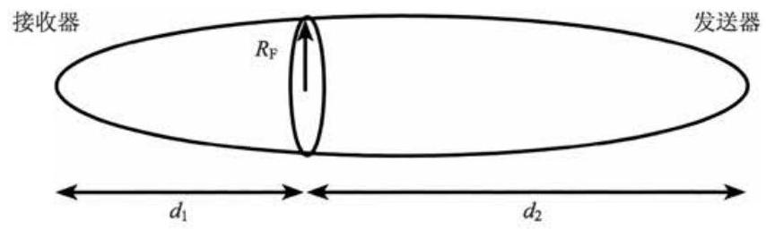
图 9.14 第一菲涅耳区的描述 (菲涅耳椭圆体)
事实上,通常认为,为了避免有害的反射,有必要在中继器的第一菲涅耳区外部再附加一个 \({200}\mathrm{\;m}\) 或 \({500}\mathrm{\;m}\) 的隔断区。对于这些为避免反射保留的附加裕量是相当保守的且仅凭经验, 通过详细的研究可以减少这个空间裕量。
对于 UHF 电视转播连接,如果风电场在接收天线的相对方向 \({60}^{ \circ }\) 角以外时, 不会产生较大的问题。如果风电场场址位于 \({15}^{ \circ } \sim {60}^{ \circ }\) ,就可能会产生问题,但是可以采用定制的天线来解决。如果位于 \({15}^{ \circ }\) 之内就可能会产生很严重的问题。对于家庭电视接收也需要考虑同样的问题。如果风电场位于家庭接收天线的相对方向的 \({60}^{ \circ }\) 之外时不会产生问题,在 \({20}^{ \circ } \sim {60}^{ \circ }\) 时需要采用高质量的天线,如果在 \({20}^{ \circ }\) 之内时则需要新的信号源。无线电广播局强调每个风电场的提案都需要单独考虑。
9.4.1 对风力发电机组 EMI 的建模和预测¶
对于来自于风力发电机组的 EMI，存在着两个基本的干扰方式:前向散射和后向散射 (Moglia, Trusszi 和 Orsenigo, 1996)。如图 9.15 所示, 当风力发电机组安装在发射器和接收器之间时出现前向散射。干扰方式是风力发电机组对信号的散射或折射之一, 对于电视信号而言, 叶片的旋转会导致图像的褪色。当风力发电机组安装在接收器后方时会出现后向散射情况。这将会在预期信号和反射干扰后的信号之间存在一定的延时, 导致电视屏幕出现虚像或双图像。Moglia, Trusszi 和 Orsenigo(1996) (Kats 和 Rees, 1989) 对风力发电机组产生的电磁干扰进行了分析。
接收到的有用载波信号 \(C\) ,公式如下:
式中, \({P}_{\mathrm{T}}\) 为发射器功率 \(\left( \mathrm{{dB}}\right) ;{A}_{\mathrm{{TR}}}\) 为发射器和接收器之间的衰减 \(\left( \mathrm{{dB}}\right) ;{G}_{\mathrm{{TR}}}\) 为接收天线在所需要的信号方向的增益 \(\left( \mathrm{{dB}}\right)\) 。干扰信号 \(I\) ，如下式所示:
式中, \({A}_{\mathrm{{TW}}}\) 为在发射器和风力发电机组之间的衰减 \(\left( \mathrm{{dB}}\right) ;{A}_{\mathrm{{WR}}}\) 为风力发电机组到接收器之间的衰减 \(\left( \mathrm{{dB}}\right) ;{G}_{\mathrm{{WR}}}\) 为接收天线在反射信号方向上的增益 \(\left( \mathrm{{dB}}\right) ;{10}\lg ({4\pi \sigma }/ \; {\lambda }^{2}\) ) 为风力发电机组的散射作用; \(\sigma\) 为电波穿过的截面 \(\left( {\mathrm{m}}^{2}\right)\) ,可以理解为风力发电机组的有效面积, 它是风力发电机组的几何形状和绝缘体特性以及信号波长的函数; \(\lambda\) 为信号的波长 \(\left( \mathrm{m}\right)\) 。
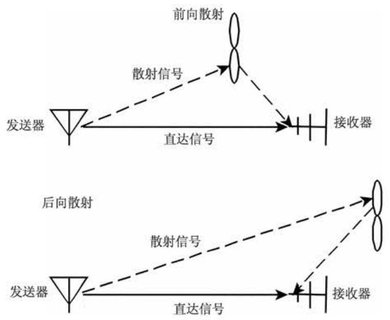
图 9.15 风力发电机组对无线电系统的干扰
有效信号和干扰源的比可以由下式表示为
假设发射器和接收器之间的距离要比风力发电机组和接收器之间的距离 (用 \(r\) 表示) 大得多,那么 \({A}_{\mathrm{{TW}}} = {A}_{\mathrm{{TR}}}\) 。假设自由空间损耗为 \({A}_{\mathrm{{WR}}} = {20}\lg \left( {{4\pi r}/\lambda }\right)\) ,并定义天线的分辨系数为 \({\Delta G} = {G}_{\mathrm{{TR}}} - {G}_{\mathrm{{WR}}}\) ,那么 \(\left( {C/I}\right)\) 可以简化为
因此,有效载波信号与干扰源的比可以通过以下方面进行提高:
(1)增加风力发电机组到接收器之间的距离 \(r\) 。
(2)减小电波穿过截面 \(\sigma\) 。
(3)提高天线的分辨系数 \({\Delta G}\) 。
载波与干扰信号的比值 \(\left( {C/I}\right)\) 确定了无线广播连接的质量。例如,固定的微波中继器可能需要 \(C/I\) 为 \({50} \sim {70}\mathrm{\;{dB}}\) ,而移动式无线接收装置可能只要求 \(C/I\) 为 15~30dB(ETSU,1997b)。
因此，式(9.25)可以重新整理从而定义一个“禁止区”。在这个区域内，如果需要维持充分的载波干扰比，则不允许安装风力发电机组。
可以看出，“禁止区”严格取决于电波穿过截面 \(\sigma\) 。一台风力发电机组的电波穿过截面一般无法直接确定, 在文献中描述了一些获取方法。Van Kats 和 Van Rees (1989)对一个直径 \({45}\mathrm{\;m}\) 的风力发电机组进行了全面的一系列的现场测量。他们估计了在 \({24}{\mathrm{{dBm}}}^{2}\) 的反向散射中的电波穿过截面,并估计了 \({46.5}{\mathrm{{dBm}}}^{2}\) 前向散射区在最坏情况下的值(两个值都用 \({10}\lg \sigma\) 的形式表达)。
当无法得到实际的测量结果时, 基于将风力发电机组叶片近似为基本形状, 可以作一个简单的预测(Moglia, Trusszi 和 Orsenigo, 1996)。例如, 对于一个金属的塔架, 电波穿过截面可以由下式表示:
式中, \(a\) 为塔架的半径 \(\left( \mathrm{m}\right) ;L\) 为塔架的长度 \(\left( \mathrm{m}\right) ;\lambda\) 为信号波长 \(\left( \mathrm{m}\right)\) 。对于矩形的金属板，则有
式中, \(l\) 为金属板的宽度 \(\left( \mathrm{m}\right)\) 。
在后向散射区, 反射仅由叶片金属部分产生, 因此, 在简化公式中只用到了这些部分的尺寸。然而, 在前向散射区内, 叶片的所有部分都会产生影响, 尽管这些影响会随叶片材料 (GRP) 和形状而减少。因此, Moglia, Trusszi 和 Orsenigo (1996)应用了简化公式,但对叶片材料应用了 \(- 5\mathrm{\;{dB}}\) 进行校正,对叶片形状应用了 \(- {10}\mathrm{\;{dB}}\) 的校正(当采用矩形近似时)。
Hall(1992)引用了一个被许多学者采用的电波穿过截面模型如下:
式中, \(A\) 为一个叶片的面积 \(\left( {\mathrm{m}}^{2}\right) ;X\left( \alpha \right)\) 为描述散射信号在 \(\alpha\) 方向上振幅的函数; \(\lambda\) 为信号波长 \(\left( \mathrm{m}\right) ;C\) 为校正常数,它可以设为 \({15}\mathrm{\;{dB}}\) 。
在 ETSU(1997b), Dabis 和 Chignell 对这些确定电波穿过截面的简单方法的用法提出了怀疑, 并建议采用更精确的计算。他们建立的非常复杂的模型基于物理光学公式, 并假设利用一个平面来代替叶片, 忽略了非金属叶片材料以及复杂的叶片形状所产生的影响。尽管 Dabis 和 Chignell 运用他们的方法得到了令人感兴趣的结果, 他们仍然认为还需要进行大量的深入工作, 从而进一步以现场数据为依据证明该方法的有效性。
Moglia, Trusszi 和 Orsenigo(1996)以及 Van Kats 和 Van Rees(1989)的简化方法使干扰区域或禁止区域变得可以计算, 如图 9.16 所示。
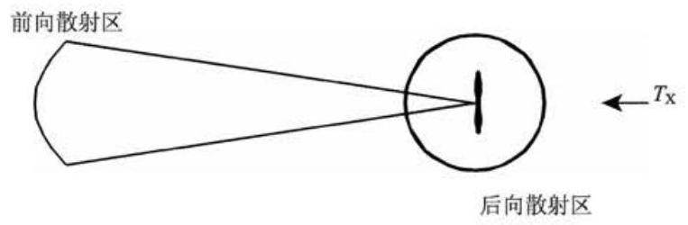
图 9.16 风力发电机组干扰区域简单计算实例
后向散射区[对于给定的 \(\left( {C/I}\right)\) 值] 的半径要比前向散射区的半径小得多。这是因为电波穿过截面很小 (只考虑了叶片根部的金属部分), 并且还能够利用接收天线的方向性 \(\left( {\Delta G}\right)\) 。式 (9.27) 只定义了这两个区域的半径,但有必要确定两个区域的伸展角度。Van Kats 和 Van Rees(1989)认为存在一些不确定因素, 能使反向散射区变为前向散射区。Sengupta 和 Senior 在 Spera(1994) 中指出, 在风力发电机组四周有 80% 的区域应该在后向散射区中，剩下的 20% 在前向散射区中。然而, Moglia, Trusszi 和 Orsenigo(1996)用到了如下的公式:
式中, \(\lambda\) 为信号波长 \(\left( \mathrm{m}\right) ;L\) 为叶片的单元半径。后向散射区在 \(0 < \left| \Phi \right| < {\Phi }_{\text{ border }}\) 间延伸，而前向散射区为 \({\Phi }_{\text{ border }} < \left| \Phi \right| < \pi\) 。
对于 Van Kats 和 Van Rees(1989) 所研究的直径 \({45}\mathrm{\;m}\) 的风力发电机组,可以确定其后向散射区半径为 \({100}\mathrm{\;m}\left( {C/I}\right)\) 处为 \({27}\mathrm{\;{dB}}\) 等值线, \({200}\mathrm{\;m}\left( {C/I}\right)\) 处为 \({33}\mathrm{\;{dB}}\) 等值线。前向散射区具有更大的半径,半径 \({1.3}\mathrm{\;{km}}\left( {C/I}\right)\) 处为 \({27}\mathrm{\;{dB}}\) 等值线, \({2.7}\mathrm{\;{km}} \; \left( {C/I}\right)\) 处为 \({33}\mathrm{\;{dB}}\) 等值线。他们认为 \({33}\mathrm{\;{dB}}\) 的 \(\left( {C/I}\right)\) 值不会对可视电视产生干扰。 Moglia, Trusszi 和 Orsenigo(1996)把他们的方法应用到中型风力发电机组上(直径为 \({33}\mathrm{\;m}\) 和 \({34}\mathrm{\;m}\) ),得出对于 \({46}\mathrm{\;{dB}}\left( {C/I}\right)\) 的等值线后向散射区半径约为 \({80}\mathrm{\;m}\) ,前向散射区半径为 \({450}\mathrm{\;m}\) 。现场测量结果证实了他们的计算,也与预测的结果一致。在这两个例子中, 后向散射不太可能成为一个大问题, 因为其他限制条件 (如噪声和视觉的影响)将确保任何建筑物都会在“禁止区”之外。
总之, 可以得出这样的结论: 通过精确的分析来确定风力发电机组与无线电通信产生相互干扰的途径仍然是困难的，尤其是这些技术仍然需要进一步发展和确认。这些技术包括确定不规则地形和叶片形状及其材料的细节对电磁干扰的影响。依据简化的假设来估计电波穿过截面的方法只能认为是近似的。然而, 这种假设的确提供了对问题的定性的理解方法。事实上, 为了确定风力发电机组或风电场的开发是否会引起电磁干扰问题, 需要与当地电信局进行对话、讨论。
9.4.2 航空雷达¶
不管是民用还是军用系统上，风力机对航空雷达潜在的影响是人们关注最主要的问题,并导致了一些风电场项目没有进行 (ETSU, 2002)。一个雷达系统工作原理是通过在无线电频率发射电磁能量脉冲, 接收并放大反射信号然后进行处理。 与目标对象之间的距离可通过发射脉冲与接收信号之间的时间差计算得到。一个大的反射信号, 由于风力机的大的雷达横截面, 可导致在接收或者数据处理电路中出现幅值限制及变形。此外, 航空主雷达利用多普勒效应来区分固定和移动的物体,但难以区分风电场中移动的风力机叶片和移动的飞机。
风电场对雷达的主要影响如下(ETSU,2002):
(1)屏蔽。防空雷达以很高的频率运行，因此，需要一个清晰的“视线”。风电机组造成的阴影效应, 并产生检测不到目标的区域。屏蔽同时还影响气象雷达, 其通过一个地面正上方非常窄的角度来观察。
(2)雷达杂波。不需要的雷达回波是公知的“杂波”，同时旋转的风电机组可导致大量的, 有时是断断续续的回波, 可能会干扰雷达, 将其当成一个移动物体。
(3)散射。散射发生于雷达信号被旋转的风力发电机组叶片反射或折射以及雷达系统检测的情况下。这可能导致多个假雷达回波出现，甚至从真正的飞机的回波定位了一个错误的位置。
图 9.17 是一个计算三个风电场中雷达屏蔽区域的例子, 该图显示出每个雷达发生屏蔽的区域。使用的是一个具有雷达视线的数字地面模型, 来确定风力发电机组在什么地方可能会屏蔽雷达系统。这个计算是基于雷达视线角, 因此, 包括地球曲率和当地地形。
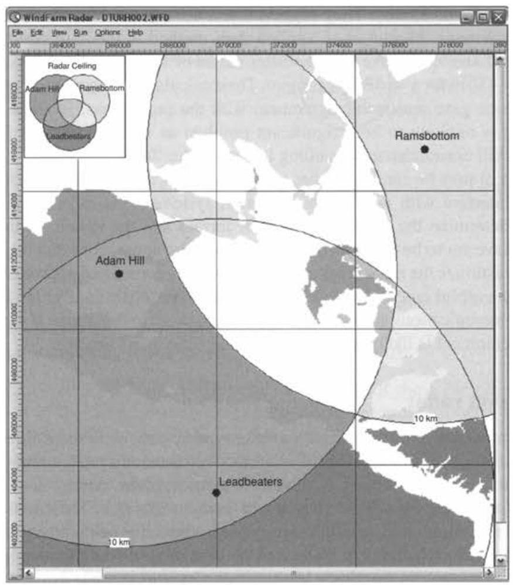
图 9.17 计算三个雷达站雷达屏蔽区域的例子 (由 ReSoft 许可转载)
降低风电场对航空雷达的影响一直都是很有兴趣的工作 (ETSU, 2003a, 2003b)。具体的对策包括修改雷达系统的运行方式，改变风电场几何学布局或位置, 降低风电机组上特别是叶片上的雷达截面同样可行。一些研究项目已开展调查飞机隐身技术的使用，但是迄今为止，由于其在生产过程中的成本和日益增加的精密度, 这些方法都没有投入广泛的商业化生产。
9.5 生态评估¶
风电场通常会建在生态系统比较重要的地方, 环境报告将包括一份对以下各个方面的全面评估: 当地的生态、维持资源的重要性、风电场的影响 (包括建设期间和运行期间)以及缓解这些影响的措施。基于水文对生态系统的重要性, 同时还应该包括一份关于场址的水文状态的评估。English Nature 建议, 在考虑可再生能源的规划对生态的影响时, 需要考虑以下各个方面:
(1)在风电场建设过程中对野生生物聚居区的直接破坏。
(2)在风电场运行过程中对个别物种的直接影响。
(3)由于风电场建设产生的后果或是对土地使用管理的改变，从而引起的野生生物聚居区的长期改变。
因此，生态评估的范围应该包括如下几个方面:
(1)一个完整的植物调查，包括风电场场址内的植物种类的识别和描绘。
(2)对现存的鸟类和非鸟类动物的理论和现场调查。
(3)一份关于风电场水文状况与当地生态相关性的评估。
(4)对当地生态保护重要性的评估。
(5)对风电场潜在影响的评估。
(6)提出的减缓影响的措施，包括风电场对本地影响中的哪些部分应该避免。
Gipe(1995)提出对动、植物(包括鸟类)的主要影响是来自道路的建设和对它们栖息地的破坏。直接由建设风电场导致动植物栖息地减少的部分是较小的(大约占 \(3\%\) )，并且这种影响在风电场建成之后还能通过复原道路和建筑所占面积进一步减少。然而，在建设过程中可能会对野生动植物产生巨大的影响，包括重型卡车频繁来往所造成的影响，因此，有必要谨慎地安排主要的工程时间表，从而避免一些敏感时期(如繁殖的季节)。
在 20 世纪 90 年代，风能的发展对鸟类的影响是颇具争议的，因为在美国及西班牙南部，时常有猛禽会撞到风力发电机组上。在欧洲的其他地方主要考虑的不是鸟类与风力发电机组相撞，而是对鸟类的干扰以及栖息地减少等相关的问题 (Colson, 1995; ETSU, 1996)。从那时就开始进行了大量的关于风电场对鸟类影响的研究。研究结果表明, 如果在风电场建设之前以及运行过程中进行仔细的评估和监测, 风电场对鸟类环境的影响会得到有效的管理。基于如何通过调查来评估海上风电场对鸟类的影响的指导在《苏格兰国家文化遗产》(2005)进行了描述。
Lowther 在 ETSU(1996) 中提出, 风电场的出现可能会在以下的一个或几个方面影响鸟类的生活:
(1)与风力发电机组的碰撞。
(2)由于干扰引起的迁徙。
(3)屏障效应。
(4)栖息地的改变和减少。
Drewitt 和 Langston (2006) 做了大量的学术研究来评估鸟类对风电场的影响。他们发现每年的风力机与鸟的碰撞率在每个风力机 0.01~23 之间。较高的数值是对应于 scanvenger removal 的。这些数值反映的是岸边的情况, 和海鸥、燕鸥和鸭有关。风电场导致的典型生态的缺失是整个开发区域的 \(2\% \sim 5\%\) 。
然而, Lloyd(ETSU,1996)提出, 由于在风电场的发展过程中, 鸟类栖息地被完全破坏的部分相对很小,主要的问题是在风电场建设和运行过程中对鸟类行为的影响，以及由于鸟类与风力发电机组相撞导致的直接死亡率。
在 20 世纪 90 年代, Altamont 隘口的风电场并不是典型的欧洲项目或最近在美国开发的项目。在那里,风力发电机组的数量非常多,在 \({200}{\mathrm{\;{km}}}^{2}\) 的面积上大约有 7000 台风力发电机组,风力发电机组型号很小 (通常为 100kW),通常是金属格状的塔架，并且在主风向上的排列空间也相当紧密。Lloyd(ETSU, 1996) 指出，导致较高的飞禽撞击率的因素有很多。Altamont 风力发电机组通常安装在较低的山凹或山脊上，从而利用风的自加速。大部分的撞击发生在风力发电机组排列的末端，在那里，鸟类可能试图在密布的风力发电机组边缘飞过。在 Tarifa 和 Altamont 两个地方的树都很少, 有些鸟类把金属塔架作为栖息的地方, 甚至在上面做巢。
Lowther(ETSU,1996)引用了早期英国风电场的鸟类撞击率, 如表 9.7 所示。
表 9.7 在英国风电场中鸟类的撞击事件(Lowther ETSU, 1996) (在获得 ETSU 代表 DTI 允许下复制的)
| 风电场 | 风力发电机组台数 | 鸟类撞击事件数/ (风力发电机组 $\cdot$ 年) |
| Burgar Hill, Orkney | 3 | 0.15 |
| Haverigg, Cumbria | 5 | 0 |
| Blyth Harbour, Northumberland | 9 | 1.34 |
| Bryn Titli, Powys | 22 | 0 |
| Cold Northcott, Cornwall | 22 | 0 |
| Mynydd y Cemmaes, Powys | 24 | 0.04 |
在 Burgar 山上，三台实验风力发电机组，包括一台 3MW 60m 直径的模型机， 安装在许多国家重点保护鸟类的栖息地附近，英国 4% 的未成年的雌性猎兔狗栖息于此。实验人员对此进行了长达 9 年的研究，在此期间记录有 4 次死亡事件(三只黑头海鸥和一只隼), 可能是与风力发电机组撞击的结果。
Blyth Harbour 风电场拥有 9 台 300kW 风力发电机组, 都安装在海港的防浪堤沿岸，这种安装具有明显的科学意义。由于在所有的英国风电场中，该风电场所在位置的鸟类密度最高(每天能确定有 110 种，1100 多只鸟在此活动)，因此，它是一个监测项目。栖息在这里的主要物种有鸬鹚、绒鸭、紫矶鹞和三种类型的海鸥。 其中, 对紫矶鹞进行了特别的关注, 它们是在港口过冬, 因此, 通过提供额外庇护场所的特殊办法来改善它们的栖息环境。3 年多的时间，证实有 31 起鸟类撞击事件。因撞击而死亡的鸟类主要是绒鸭和海鸥。根据计算结果，对当地的鸟类数量并没有产生显著的不良影响。与在荷兰、丹麦的沿海风电场所进行的研究结果相似, 大多数物种已经适应了风力发电机组的结构。考虑到干扰和栖息地的丧失, 这项研究指出不会有显著的长期影响。风力发电不会对紫矶鹞产生影响，并且尽管鸬鹚会在风电场建设过程中进行暂时的迁移，但是在风电场建设结束后，它们中的大部分又回到了原来的栖息地。
Bryn Titli 风电场建在了专门的科学研究区域附近, 在那里生存着秃鹰、隼、红松鸡、鹬、大乌鸦等重要的生物群落。这个风电场对鸟类影响的研究表明，并不存在统计意义上的对正在成长的鸟类的明显的影响。在 1994 < 1995 年进行的鸟类与风力发电机组撞击的研究中指出, 在当时不太可能出现鸟类因撞击风力发电机组而死亡的事故。
Clausager(ETSU,1996)对美国和欧洲文献中关于风力发电机组对鸟类的影响进行了深入的总结。他得出结论如下:在针对以沿海风电场为主的研究中，因撞击风力发电机组叶轮而死亡的危险性很小，并且对常规物种数量的影响并没有直接关系。纵览 16 项研究，并考虑到没有发现的被撞死的鸟类，所以乘以系数 2.2 ， 他估计鸟类与风力发电机组撞击的死亡率的最高值是 \(6 \sim 7\) 只/(风力发电机组 \(\cdot\) 年)。在丹麦，大约有 3500 台风力发电机组，这最多会导致 20000~25000 只鸟因撞击而死亡。这些数字是无法与在丹麦每年有至少一百万只鸟由于交通事故而丧命相比的。他认为，栖息地的直接丧失是很少的，而且是次要的因素，但是他对由于风电场建设, 尤其是对低洼地的排水而造成的地形变化给予了极大关注。他也提到, 有些鸟类在某块区域内的短暂停留可能会受到不良的影响, 记录显示在 250~800m的区域内，尤其是对于天鹅和涉禽类已经造成了影响。有必要进行更进一步的研究，尤其是海上风电场和在丘陵地开发的风电场，在那些地方只有很少的研究被报道。
关于风能项目对环境影响的会议(2007)已经召开，相关文献综合回顾了风电机组对鸟类和蝙蝠类的影响。尽管通过一些数据清楚地认识到了局限性，他们预计在 2003 年美国 0.003% 的鸟类死亡是由于风电机组的原因。他们同时引用了基于猛禽类的 14 项研究结果给出了一个风电机组平均致死率为每个风力机每年 0.03 只鸟。
Lloyd(ETSU,1996)和Colson(1995)都建议采取缓解措施来保护珍稀鸟类, 同时又能使风能事业继续发展，这些措施包括如下几个方面:
(1)每个风电场都应该进行基础研究，从而确定目前哪些物种在此居住，以及是如何使用这块地方的，这应该是对所有的风力发电机组进行环境评估中的强制部分。
(2)除非是对某块场址的特定调查表明存在其他情况，否则应该避开已知的鸟类迁徙走廊和已经是鸟类密集的地方。在明显的鸟类迁徙通道上，风力发电机组应该留有合理的间距(如在两个风力发电机组群之间留有较大的空间)。
(3)稀有的/敏感的物种居住环境，包括建巢和栖息的地方，应该避免建立风力发电机组和辅助的建筑(应该注意到，气象桅杆和风力发电机组一样会对鸟类产生危险)。
(4)在建设过程中，需要作特殊考虑的是工程建设者的出入路径应该受到限制，从而避免对整个场址整体形成干扰。如果可能的话，应该在非哺育季节建设风电场。如果这样做比较困难, 那么建设应该在繁殖季节之前, 这样就可以避免占用鸟巢的地点。
(5)管状的风力发电机组塔架优于桁架式结构的塔架，并考虑采用非拉线式的气象桅杆。
(6)在选择机组时，优先考虑采用少量的大型风力发电机组，而不是大量的小型风力发电机组。大型风力发电机组具有较低的旋转速度，要比小型风力发电机组更容易让鸟类发现。
(7)在风电场中，电力输送系统应该安装在地下。
(8)对风力发电机组应该进行合理的排列，从而有足够的空间让鸟类飞过，而且它们的行动还不会遭遇严重的干扰。在英国的风电场，暂时建议两台风力发电机组叶尖之间的最小距离为 \({120}\mathrm{\;m}\) ，这样可以使死亡率降到最低。风力发电机组应该远离山脊，并避免使用鸟类用于穿越高地的山凹和山谷。
Drewitt 和 Langston(2006)建议风电场的开发应该避免以下地区:
(1)密集的水鸟和水禽活动区。
(2)猛禽频繁活动区。
(3)繁殖和越冬动物频繁活动区。
有趣的是，在苏格兰的一个 30MW 风电场的开发只有在对以下方面进行深入的研究之后才能进行:对猛禽的影响，从松林到遍布沼泽的荒地的 450 公顷变化， 以及更进一步将羊群排除在 230 公顷以外 (Madders and Walker, 1999)。据预测， 拓展由荒地构成的栖息地会增加猎物远离风电场, 从而降低秃鹰和其他猛禽与风力发电机组相撞的风险。
参考文献¶
AWEA (2008) Wind Energy Siting Handbook. American Wind Energy Association, Washington, DC. http://www.awea.org/sitinghandbook/, accessed August 2010.
BS 4142 (1997) Method for rating industrial noise affecting mixed residential and industrial areas. British Standards Institution.
BWEA (1994) Best Practice Guidelines for Wind Energy Development. British Wind Energy Association (now renamed RenewableUK). http://www.bwea.com/ref/bpg.html, accessed August 2010.
Colson, E.W. (1995) Avian interactions with wind energy facilities: a summary. In: Proceedings American Wind Energy Association Conference, Windpower '95, pp. 77-86.
Committee on Environmental Impacts of Wind Energy Projects (2007) National Research Council Environmental Impacts of Wind-Energy Projects. http://www.nap.edu/catalog/11935.html.
Derrick, A. (1993) Development of the Measure-Correlate-Predict strategy for site assessment. In: Proceedings of the European Wind Enèrgy Association Conference, Travemunde (ed. A.D. Garrad, W. Palz and S. Sheller), pp. 681-685.
Devine-Wright, P. (2005) Beyond NIMBYism: towards an integrated framework for understanding public perceptions of wind energy, Wind Energy 8(2), 125-139.
Drewitt, A.L. and Langston, R.H.W. (2006) Assessing the impacts of wind farms on birds, Ibis 148, 29-42.
English Nature (1994) Nature conservation guidelines for renewable energy projects English Nature, Peterborough.
ETSU (1993) 'Attitudes to wind power - A survey of opinion in Cornwall and Devon', Report W/13/00354/038/REP.
ETSU (1994) Cemmaes wind farm sociological impact study - final report. Report W/13/00300/REP.
ETSU (1996) Birds and wind turbines: can they co-exist. Proceedings of a seminar held at the Institute for Terrestrial Ecology, 26 March. Huntingdon.
ETSU (1997a) UK onshore wind energy resource. ETSU Report R-99, F Brocklehurst, http:// www.decc.gov.uk/en/content/cms/what_we_do/uk_supply/energy_mix/renewable/explained/wind/ windsp_databas/windsp_databas.aspx, accessed August 2010.
ETSU (1997b) The assessment and rating of noise from wind farms ETSU-R-97. Final Report of the Working Group on Noise from Wind Turbines http://webarchive.nationalarchives.gov.uk/+/http://www.berr.gov.uk/energy/sources/renewables/explained/wind/onshore-offshore/ page21743.html Accessed August 2010.
ETSU (1997c) Investigation of the interactions between wind turbines and radio systems aimed at establishing co-siting guidelines, Phase 1: Introduction and modelling of wind turbine scatter. Report W/13/00477/REP.
ETSU (2002) Wind energy and aviation interests - interim guidelines. Wind energy defense and civil aviation interests working group. ETSU Report W/14/00626/REP.
ETSU (2003a) Feasibility of mitigating the effects of windfarms on primary radar. M.M. Butler and D.A. Johnson, ETSU Report W/14/00623/REP.
ETSU (2003b) Wind farms impact on radar aviation interests - final report, G.J. Poupart, ETSU Report W/14/00614/REP.
EWEA (2009) Wind Energy the Facts. Earthscan, London.
Gipe, P. (1995) Wind Energy Comes of Age. John Wiley and Sons, Inc. New York.
Hall, H.H. (1992) The assessment and avoidance of electromagnetic interference due to wind farms. Wind Engineering 16(6), 326-337.
Horner + maclennan and Envision (2006) Visual Representation of Windfarms, Good Practice Guidance. Scottish Natural Heritage Commissioned Report FO3 AA 308/2 http://www.snh.gov.uk/docs/A305436.pdf, accessed August 2010
IEC 61400-11 (2006) Wind turbine generator systems - Part 11: Acoustic noise measurement techniques. International Electrotechnical Commission.
IEC 61400-14 (2005) Wind turbines - Part 14: Declaration of apparent sound power level and tonality values. International Electrotechnical Commission.
ISO 9613-2 (1996) Acoustics - Attenuation of sound during propagation outdoors - Part 2: General method of calculation. International Standards Organisation.
Landberg, L. and Mortensen, N.G. (1993) A comparison of physical and statistical methods for estimating the wind resource at a site. In: Proceedings of the 15th British Wind Energy Association Conference, 6-8 October, Stirling, (ed. K.F. Pitcher), pp. 119-125. Mechanical Engineering Publications, London.
Madders, M. and Walker, D.G. (1999) Solutions to raptor-wind farm interactions. In: Proceedings of the 21st British Wind Energy Association Conference, 1-3 September, Cambridge (ed. P. Hinson), pp. 191-195. Mechanical Engineering Publications, London.
Moglia, A., Trusszi, G. and Orsenigo, L. (1996) Evaluation methods for the electromagnetic interferences due to wind farms. In: Proceedings of the Conference on Integration of Wind Power Plants in the Environment and Electric Systems, Rome 7-9 October, Paper 4.6.
Pinder, J.N. (1992) Mechanical noise from wind turbines. Wind Engineering 16(3), 158-168.
Scottish National Heritage (2005) Survey methods for use in assessing the impacts of onshore windfarms on bird communities, SNH, http://avifauna.se/apps/file.asp?Path=2&ID= 4943& File=SNH_Guidance+document+on+survey+methods.pdf
Spera, D.A. (1994) Wind Turbine Technology: Fundamental Concepts of Wind Turbine Engineering. ASME Press, New York.
Stanton, C. (1994) The visual impact and design of wind farms in the landscape. In: Proceedings of the British Wind Energy Association Conference, 15-17 June, Sterling, pp. 249-255. Mechanical Engineering Publications, London.
Stiesdal, H. and Kristensen, E. (1993) Noise control on the BONUS 300 kW wind turbine. In: Proceedings of the 15th British Wind Energy Association Conference, York, 6-8 October, pp. 335-340. Mechanical Engineering Publications, London.
Still et al. (1994) The birds of Blyth Harbour. In: Proceedings of the British Wind Energy Association Conference, 15-17 June, Sterling, pp. 241-248. Mechanical Engineering Publications, London.
Taylor, D. and Rand, M. (1991) Planning for wind energy in Dyfed. Energy and Environment Research Unit, Open University, EERU 065.
Troen, I. and Petersen, E.L. (1989) European Wind Atlas. http://www.windatlas.dk/europe/About.html, accessed August 2010. Risø National Laboratory, Roskilde.
University of Newcastle (2002) Visual Assessment of Windfarms Best Practice. Scottish Natural Heritage Commissioned Report F01AA303A. http://www.snh.gov.uk/docs/A305437.pdf.accessed August 2010.
van Kats, P.J. and van Rees, J. (1989) Large wind turbines: a source of interference for TV broadcast reception. In: Wind Energy and the Environment, (ed. D.T. Swift-Hook). IEE Energy Series.
Verkuijlen, E. and Westra, C.A. (1984) Shadow hindrance by wind turbines. In: Proceedings of the European Wind Energy Conference, 22-26 October, pp. 356-361, Hamburg.
Wagner, S., Bareis, R. and Guidati, G. (1996) Wind Turbine Noise. Springer-Verlag, Berlin.
Walmsley, J.L., Salmon, J.R. and Taylor, P.A. (1982) On the Application of a Model of Boundary-Layer Flow over Low Hills to Real Terrain, Boundary-Layer Meteorology, 23, 17-46.
Walmsley, J.L., Taylor, P.A. and Keith, T. (1986) A Simple Model of Neutrally Stratified Boundary-Layer Flow over Complex Terrain with Surface Roughness Modulations - MS3DJH/3R, Boundary-Layer Meteorology, 36, 157-186.
WAsP - www.wasp.dk and Chapter 8 of European Wind Atlas (1989) Risø National Laboratory, Denmark for the Commission of the European Communities. Available from Dept of Meteorology and Wind Energy, Risø National Laboratory, PO Box 49, DK -4000 Roskilde, Denmark and www.windpower.dk.